4 Definition of Clock, MG and ML scores
4.1 Introduction
After cleaning the methylation data from TME effects we went on to look for global trends in the methylation data, i.e. trends that affect all or almost all of the methylome, in particular due to replication age and copy number aberration effects.
4.2 Initialize
source(here::here("scripts/init.R"))4.3 Load data
We load both TME-normalized and raw methylation values.
all_norm_meth <- fread(here("data/all_norm_meth.tsv")) %>% as_tibble() all_mat_raw <- get_all_meth() %>% intervs_to_mat()
head(all_mat_raw)## MB_0006 MB_0028 MB_0030 MB_0035 MB_0040
## chr1_762469_763020 0.000000000 0.00000000 0.00000000 0.00000000 0.00000000
## MB_0046 MB_0050 MB_0053 MB_0054 MB_0062
## chr1_762469_763020 0.00000000 0.00000000 NA 0.00000000 0.000000000
## MB_0064 MB_0068 MB_0112 MB_0113 MB_0114
## chr1_762469_763020 0.021276596 0.000000000 0.01058201 0.000000000 NA
## MB_0118 MB_0119 MB_0120 MB_0121 MB_0123
## chr1_762469_763020 0.007067138 0.007751938 0.00000000 0.00000000 0.000000000
## MB_0124 MB_0125 MB_0126 MB_0127 MB_0128
## chr1_762469_763020 0.01731602 0.000000000 0.02469136 0.000000000 0.00000000
## MB_0129 MB_0130 MB_0131 MB_0133 MB_0134
## chr1_762469_763020 0.00000000 0.011764706 0.012500000 0.000000000 0.027522936
## MB_0135 MB_0136 MB_0137 MB_0138 MB_0140
## chr1_762469_763020 0.00000000 0.00000000 0.008403361 0.000000000 0.00000000
## MB_0142 MB_0143 MB_0144 MB_0145 MB_0146
## chr1_762469_763020 0.000000000 0.004901961 0.00000000 0.00990099 0.00000000
## MB_0147 MB_0148 MB_0149 MB_0150 MB_0151
## chr1_762469_763020 0.026086957 0.00000000 0.000000000 0.000000000 0.00000000
## MB_0152 MB_0154 MB_0155 MB_0157 MB_0162
## chr1_762469_763020 0.000000000 NA 0.004032258 0.000000000 0.00000000
## MB_0163 MB_0164 MB_0165 MB_0166 MB_0167
## chr1_762469_763020 NA 0.023809524 0.00000000 0.021126761 0.00000000
## MB_0168 MB_0169 MB_0170 MB_0171 MB_0172
## chr1_762469_763020 0.005494505 0.03000000 0.00000000 0.046511628 0.00000000
## MB_0173 MB_0174 MB_0175 MB_0176 MB_0177
## chr1_762469_763020 0.009569378 0.019607843 0.000000000 0.00000000 0.013513514
## MB_0178 MB_0179 MB_0180 MB_0181 MB_0184
## chr1_762469_763020 0.029411765 0.012195122 NA 0.000000000 0.00000000
## MB_0188 MB_0189 MB_0191 MB_0192 MB_0193
## chr1_762469_763020 0.000000000 0.00000000 NA 0.000000000 0.000000000
## MB_0194 MB_0195 MB_0197 MB_0198 MB_0199
## chr1_762469_763020 NA 0.017094017 0.000000000 0.01886792 0.000000000
## MB_0201 MB_0202 MB_0203 MB_0204 MB_0205
## chr1_762469_763020 0.00000000 0.00000000 0.03000000 0.000000000 0.01442308
## MB_0206 MB_0207 MB_0214 MB_0215 MB_0218
## chr1_762469_763020 0.000000000 0.021739130 0.000000000 0.00000000 0.00000000
## MB_0220 MB_0221 MB_0222 MB_0223 MB_0224
## chr1_762469_763020 NA NA 0.00000000 0.018691589 0.02197802
## MB_0225 MB_0226 MB_0227 MB_0228 MB_0229
## chr1_762469_763020 0.018867925 0.014925373 0.006993007 NA 0.000000000
## MB_0231 MB_0233 MB_0234 MB_0235 MB_0236
## chr1_762469_763020 NA 0.00000000 0.000000000 0.004608295 0.00000000
## MB_0238 MB_0239 MB_0240 MB_0241 MB_0242
## chr1_762469_763020 NA 0.00000000 0.000000000 0.00000000 0.00000000
## MB_0243 MB_0244 MB_0245 MB_0246 MB_0248
## chr1_762469_763020 0.000000000 0.012048193 0.00000000 0.004739336 0.000000000
## MB_0249 MB_0250 MB_0251 MB_0252 MB_0253
## chr1_762469_763020 0.0189873418 0.01449275 0.03255814 0.031914894 0.005882353
## MB_0254 MB_0255 MB_0256 MB_0257 MB_0258
## chr1_762469_763020 0.000000000 0.006666667 0.000000000 0.004273504 0.013157895
## MB_0259 MB_0260 MB_0261 MB_0262 MB_0263
## chr1_762469_763020 NA 0.01675978 0.008474576 0.048780488 0.000000000
## MB_0264 MB_0265 MB_0266 MB_0268 MB_0270
## chr1_762469_763020 0.00000000 0.000000000 0.00000000 0.009345794 NA
## MB_0271 MB_0272 MB_0273 MB_0278 MB_0279
## chr1_762469_763020 0.000000000 0.025423729 0.00000000 0.00000000 0.01716738
## MB_0280 MB_0282 MB_0283 MB_0284 MB_0285
## chr1_762469_763020 0.00000000 0.006250000 0.00000000 0.00000000 0.04109589
## MB_0286 MB_0287 MB_0288 MB_0290 MB_0291
## chr1_762469_763020 0.000000000 0.000000000 0.061538462 NA NA
## MB_0292 MB_0293 MB_0294 MB_0295 MB_0301
## chr1_762469_763020 NA 0.04301075 0.000000000 0.000000000 0.020833333
## MB_0302 MB_0303 MB_0304 MB_0305 MB_0306
## chr1_762469_763020 0.006896552 NA 0.00000000 0.00000000 0.000000000
## MB_0307 MB_0308 MB_0309 MB_0310 MB_0311
## chr1_762469_763020 0.00000000 0.012738854 NA 0.012626263 0.000000000
## MB_0312 MB_0313 MB_0314 MB_0315 MB_0316
## chr1_762469_763020 0.00000000 0.000000000 0.000000000 0.00000000 0.000000000
## MB_0317 MB_0318 MB_0319 MB_0320 MB_0321
## chr1_762469_763020 0.00000000 0.00000000 0.01190476 0.000000000 0.010752688
## MB_0322 MB_0324 MB_0325 MB_0327 MB_0328
## chr1_762469_763020 0.01507538 0.003086420 0.009615385 0.000000000 0.01869159
## MB_0329 MB_0330 MB_0336 MB_0339 MB_0340
## chr1_762469_763020 0.000000000 0.00000000 0.000000000 0.006451613 0.000000000
## MB_0341 MB_0342 MB_0343 MB_0345 MB_0348
## chr1_762469_763020 0.00000000 0.000000000 0.000000000 0.00000000 0.03030303
## MB_0349 MB_0350 MB_0352 MB_0353 MB_0356
## chr1_762469_763020 0.000000000 0.00000000 0.000000000 NA 0.05660377
## MB_0358 MB_0359 MB_0360 MB_0361 MB_0362
## chr1_762469_763020 0.00000000 0.013793103 0.00000000 NA 0.00000000
## MB_0363 MB_0364 MB_0365 MB_0366 MB_0367
## chr1_762469_763020 0.00000000 0.00000000 0.008333333 0.00000000 0.028985507
## MB_0368 MB_0369 MB_0370 MB_0371 MB_0373
## chr1_762469_763020 0.01239669 0.020000000 0.00000000 0.003533569 0.000000000
## MB_0374 MB_0375 MB_0378 MB_0379 MB_0380
## chr1_762469_763020 0.000000000 0.02380952 0.000000000 0.000000000 0.00000000
## MB_0381 MB_0383 MB_0384 MB_0385 MB_0386
## chr1_762469_763020 0.01379310 0.008064516 0.006329114 0.000000000 0.000000000
## MB_0388 MB_0389 MB_0391 MB_0392 MB_0393
## chr1_762469_763020 0.00000000 0.00000000 0.000000000 0.00000000 0.00000000
## MB_0394 MB_0395 MB_0396 MB_0398 MB_0399
## chr1_762469_763020 0.03015075 0.000000000 0.000000000 0.00000000 0.00000000
## MB_0400 MB_0401 MB_0402 MB_0404 MB_0406
## chr1_762469_763020 0.00000000 0.00000000 0.01550388 0.000000000 0.00660066
## MB_0408 MB_0410 MB_0411 MB_0412 MB_0413
## chr1_762469_763020 0.02545455 0.00000000 0.021276596 0.000000000 0.016949153
## MB_0414 MB_0417 MB_0418 MB_0419 MB_0420
## chr1_762469_763020 0.000000000 0.000000000 0.006802721 0.008695652 0.011560694
## MB_0421 MB_0422 MB_0425 MB_0426 MB_0427
## chr1_762469_763020 0.008474576 NA 0.000000000 0.014925373 0.008196721
## MB_0428 MB_0429 MB_0431 MB_0432 MB_0434
## chr1_762469_763020 0.00000000 0.033333333 0.00000000 0.000000000 0.000000000
## MB_0436 MB_0437 MB_0439 MB_0440 MB_0442
## chr1_762469_763020 0.00462963 0.00000000 0.006410256 0.01724138 0.008888889
## MB_0443 MB_0444 MB_0445 MB_0446 MB_0449
## chr1_762469_763020 0.008474576 0.004098361 0.03465347 0.04098361 0.008403361
## MB_0451 MB_0452 MB_0453 MB_0454 MB_0455
## chr1_762469_763020 0.000000000 0.015267176 0.010928962 0.000000000 0.000000000
## MB_0458 MB_0460 MB_0462 MB_0464 MB_0465
## chr1_762469_763020 0.00000000 0.00000000 0.00000000 0.016666667 0.00000000
## MB_0466 MB_0467 MB_0468 MB_0469 MB_0471
## chr1_762469_763020 0.012500000 0.01250000 0.000000000 0.000000000 0.00000000
## MB_0474 MB_0475 MB_0476 MB_0478 MB_0479
## chr1_762469_763020 0.02597403 NA 0.000000000 0.012422360 0.00000000
## MB_0480 MB_0481 MB_0482 MB_0483 MB_0484
## chr1_762469_763020 0.000000000 0.000000000 NA NA 0.000000000
## MB_0485 MB_0486 MB_0487 MB_0488 MB_0489
## chr1_762469_763020 0.008333333 NA 0.003937008 NA 0.000000000
## MB_0492 MB_0496 MB_0497 MB_0500 MB_0501
## chr1_762469_763020 0.057142857 0.00000000 0.000000000 0.00000000 0.01522843
## MB_0502 MB_0503 MB_0504 MB_0505 MB_0506
## chr1_762469_763020 0.003558719 0.000000000 0.00000000 0.012048193 0.000000000
## MB_0507 MB_0508 MB_0510 MB_0511 MB_0512
## chr1_762469_763020 0.012269939 0.00000000 0.02884615 NA 0.000000000
## MB_0513 MB_0514 MB_0516 MB_0519 MB_0521
## chr1_762469_763020 0.000000000 0.000000000 0.027027027 0.010169492 0.00000000
## MB_0525 MB_0527 MB_0528 MB_0529 MB_0530
## chr1_762469_763020 0.008695652 0.00000000 0.00000000 0.00000000 0.006756757
## MB_0531 MB_0532 MB_0534 MB_0535 MB_0536
## chr1_762469_763020 0.000000000 0.009009009 0.044444444 0.000000000 0.009345794
## MB_0538 MB_0542 MB_0544 MB_0545 MB_0546
## chr1_762469_763020 0.000000000 0.022388060 0.01219512 0.00000000 0.000000000
## MB_0549 MB_0550 MB_0551 MB_0552 MB_0553
## chr1_762469_763020 0.000000000 0.008474576 0.03278689 0.000000000 0.009174312
## MB_0558 MB_0559 MB_0566 MB_0568 MB_0569
## chr1_762469_763020 0.014925373 0.00000000 0.000000000 0.000000000 0.015151515
## MB_0570 MB_0571 MB_0572 MB_0574 MB_0575
## chr1_762469_763020 0.012500000 0.021276596 0.000000000 0.017241379 0.000000000
## MB_0576 MB_0580 MB_0581 MB_0582 MB_0583
## chr1_762469_763020 0.00000000 0.000000000 0.000000000 0.00000000 0.00000000
## MB_0585 MB_0589 MB_0591 MB_0593 MB_0594
## chr1_762469_763020 0.02739726 0.00000000 0.000000000 0.00000000 0.00000000
## MB_0596 MB_0597 MB_0600 MB_0601 MB_0603
## chr1_762469_763020 0.000000000 0.000000000 0.005681818 0.000000000 0.000000000
## MB_0605 MB_0606 MB_0608 MB_0609 MB_0610
## chr1_762469_763020 0.004132231 0.00000000 NA 0.00000000 0.014598540
## MB_0615 MB_0616 MB_0617 MB_0618 MB_0620
## chr1_762469_763020 0.000000000 0.007692308 0.00000000 0.000000000 0.003968254
## MB_0621 MB_0622 MB_0623 MB_0626 MB_0627
## chr1_762469_763020 0.000000000 0.000000000 0.000000000 0.00000000 0.000000000
## MB_0628 MB_0631 MB_0632 MB_0637 MB_0638
## chr1_762469_763020 0.01851852 0.03260870 0.007692308 0.021978022 0.00000000
## MB_0639 MB_0642 MB_0643 MB_0646 MB_0649
## chr1_762469_763020 0.051282051 0.00000000 0.000000000 0.00000000 0.000000000
## MB_0650 MB_0653 MB_0655 MB_0656 MB_0657
## chr1_762469_763020 0.00000000 0.00000000 0.000000000 0.00000000 0.00000000
## MB_0659 MB_0662 MB_0663 MB_0664 MB_0666
## chr1_762469_763020 0.00000000 0.000000000 0.000000000 0.00000000 0.000000000
## MB_0668 MB_0676 MB_0684 MB_0685 MB_0692
## chr1_762469_763020 NA 0.000000000 NA 0.004166667 0.000000000
## MB_0698 MB_0700 MB_0719 MB_0724 MB_0732
## chr1_762469_763020 0.003703704 0.000000000 0.00000000 0.000000000 0.000000000
## MB_0735 MB_0739 MB_0748 MB_0756 MB_0767
## chr1_762469_763020 0.01234568 0.00000000 0.000000000 0.0000000000 0.000000000
## MB_0768 MB_0770 MB_0772 MB_0778 MB_0779
## chr1_762469_763020 0.01538462 0.0000000000 0.000000000 0.000000000 0.000000000
## MB_0785 MB_0786 MB_0788 MB_0794 MB_0795
## chr1_762469_763020 0.000000000 0.000000000 0.000000000 0.000000000 0.0000000000
## MB_0801 MB_0803 MB_0818 MB_0825 MB_0826
## chr1_762469_763020 0.0238095238 0.000000000 0.000000000 0.000000000 0.008695652
## MB_0828 MB_0833 MB_0835 MB_0841 MB_0850
## chr1_762469_763020 0.000000000 0.000000000 0.000000000 0.000000000 0.0000000000
## MB_0857 MB_0865 MB_0868 MB_0872 MB_0873
## chr1_762469_763020 0.000000000 0.000000000 0.011173184 0.009259259 0.013245033
## MB_0875 MB_0877 MB_0878 MB_0879 MB_0880
## chr1_762469_763020 0.004484305 0.0000000000 0.02932551 0.008635579 0.00000000
## MB_0881 MB_0884 MB_0886 MB_0890 MB_0892
## chr1_762469_763020 NA 0.02083333 0.000000000 0.031250000 0.01562500
## MB_0894 MB_0895 MB_0897 MB_0898 MB_0899
## chr1_762469_763020 0.029569892 NA 0.000000000 0.024096386 0.009708738
## MB_0901 MB_0902 MB_0904 MB_0905 MB_0906
## chr1_762469_763020 0.000000000 0.013698630 0.00000000 0.000000000 0.000000000
## MB_0908 MB_0923 MB_0924 MB_0925 MB_0927
## chr1_762469_763020 0.006944444 0.015544041 0.019607843 0.00000000 0.000000000
## MB_0928 MB_0929 MB_0930 MB_0931 MB_0932
## chr1_762469_763020 0.03149606 0.006944444 0.040000000 0.027397260 0.00000000
## MB_0933 MB_0934 MB_0935 MB_0936 MB_0937
## chr1_762469_763020 0.00000000 0.000000000 0.00990099 0.007462687 0.000000000
## MB_0939 MB_0941 MB_0942 MB_0943 MB_0944
## chr1_762469_763020 0.000000000 0.000000000 0.000000000 0.000000000 NA
## MB_0945 MB_0947 MB_0948 MB_0949 MB_0950
## chr1_762469_763020 0.01463415 0.02564103 0.000000000 0.00000000 0.020000000
## MB_0951 MB_0952 MB_0953 MB_0955 MB_0956
## chr1_762469_763020 0.003649635 0.000000000 0.02020202 0.000000000 0.000000000
## MB_0957 MB_0958 MB_0961 MB_0964 MB_0965
## chr1_762469_763020 0.00000000 0.000000000 0.000000000 0.00000000 NA
## MB_0966 MB_0967 MB_0968 MB_0969 MB_0970
## chr1_762469_763020 0.040462428 0.022471910 0.004807692 0.000000000 0.00000000
## MB_0971 MB_0973 MB_0974 MB_0975 MB_0976
## chr1_762469_763020 0.033613445 0.00000000 0.00000000 0.000000000 0.000000000
## MB_0978 MB_0979 MB_0980 MB_0982 MB_0983
## chr1_762469_763020 0.000000000 0.000000000 0.013986014 NA 0.000000000
## MB_0984 MB_0986 MB_0987 MB_0988 MB_0989
## chr1_762469_763020 0.000000000 0.008196721 0.000000000 0.00000000 0.000000000
## MB_0990 MB_0991 MB_0992 MB_0993 MB_0994
## chr1_762469_763020 0.002570694 0.0046728972 0.00000000 0.000000000 0.007604563
## MB_0995 MB_0996 MB_0997 MB_0998 MB_0999
## chr1_762469_763020 0.017937220 0.000000000 0.007751938 0.013986014 0.004201681
## MB_1001 MB_1002 MB_1003 MB_1004 MB_1005
## chr1_762469_763020 0.000000000 0.01190476 0.000000000 0.011560694 0.000000000
## MB_1006 MB_1007 MB_1008 MB_1009 MB_1010
## chr1_762469_763020 0.005494505 0.006250000 0.000000000 0.000000000 0.000000000
## MB_1011 MB_1012 MB_1013 MB_1014 MB_1015
## chr1_762469_763020 0.000000000 0.004032258 0.014388489 0.00000000 0.020270270
## MB_1017 MB_1018 MB_1020 MB_1022 MB_1023
## chr1_762469_763020 0.01923077 0.005025126 0.011560694 0.005899705 0.006666667
## MB_1024 MB_1025 MB_1026 MB_1027 MB_1028
## chr1_762469_763020 0.006493506 0.000000000 0.000000000 0.042253521 0.014925373
## MB_1029 MB_1031 MB_1032 MB_1033 MB_1034
## chr1_762469_763020 0.014084507 0.00000000 0.000000000 0.01162791 0.00000000
## MB_1035 MB_1036 MB_1037 MB_1038 MB_1039
## chr1_762469_763020 0.025641026 0.000000000 0.01333333 0.00000000 0.028169014
## MB_1040 MB_1041 MB_1043 MB_1044 MB_1045
## chr1_762469_763020 0.00000000 0.000000000 0.00000000 0.04545455 0.000000000
## MB_1046 MB_1047 MB_1048 MB_1049 MB_1050
## chr1_762469_763020 0.000000000 0.00000000 0.000000000 0.000000000 0.000000000
## MB_1051 MB_1052 MB_1053 MB_1054 MB_1055
## chr1_762469_763020 0.00000000 0.000000000 0.009900990 0.010638298 NA
## MB_1056 MB_1057 MB_1058 MB_1059 MB_1061
## chr1_762469_763020 0.000000000 0.000000000 0.016666667 0.005847953 0.000000000
## MB_1062 MB_1063 MB_1064 MB_1065 MB_1066
## chr1_762469_763020 0.03125000 0.008695652 0.006172840 0.008196721 0.008264463
## MB_1067 MB_1068 MB_1069 MB_1070 MB_1071
## chr1_762469_763020 0.012500000 0.00000000 0.009174312 0.01923077 0.000000000
## MB_1072 MB_1073 MB_1074 MB_1075 MB_1076
## chr1_762469_763020 0.000000000 0.01142857 0.006896552 0.016528926 0.000000000
## MB_1077 MB_1078 MB_1079 MB_1080 MB_1081
## chr1_762469_763020 0.00000000 0.01176471 0.06451613 0.00000000 0.01818182
## MB_1082 MB_1083 MB_1084 MB_1085 MB_1086
## chr1_762469_763020 0.000000000 0.01123596 0.012345679 0.016949153 0.006329114
## MB_1087 MB_1090 MB_1091 MB_1093 MB_1096
## chr1_762469_763020 0.000000000 NA 0.000000000 0.000000000 0.020408163
## MB_1097 MB_1098 MB_1100 MB_1101 MB_1102
## chr1_762469_763020 0.02941176 0.00000000 0.006172840 0.000000000 0.000000000
## MB_1103 MB_1104 MB_1105 MB_1107 MB_1110
## chr1_762469_763020 0.000000000 0.000000000 0.000000000 0.00000000 0.000000000
## MB_1111 MB_1114 MB_1116 MB_1118 MB_1119
## chr1_762469_763020 0.006410256 0.006493506 0.000000000 0.000000000 0.01086957
## MB_1120 MB_1121 MB_1122 MB_1123 MB_1124
## chr1_762469_763020 0.004950495 0.005235602 0.000000000 0.01224490 0.04950495
## MB_1125 MB_1126 MB_1127 MB_1129 MB_1130
## chr1_762469_763020 0.000000000 0.000000000 0.000000000 0.008163265 0.000000000
## MB_1131 MB_1132 MB_1134 MB_1135 MB_1136
## chr1_762469_763020 0.000000000 0.000000000 0.010025063 0.010810811 0.000000000
## MB_1137 MB_1138 MB_1139 MB_1141 MB_1142
## chr1_762469_763020 0.00000000 0.003174603 0.004694836 0.007712082 0.00000000
## MB_1143 MB_1144 MB_1145 MB_1146 MB_1147
## chr1_762469_763020 0.004484305 0.009836066 0.008771930 0.01307190 0.009966777
## MB_1148 MB_1149 MB_1151 MB_1152 MB_1155
## chr1_762469_763020 0.02479339 0.007092199 0.004901961 0.011235955 0.01877934
## MB_1156 MB_2517 MB_2536 MB_2556 MB_2564
## chr1_762469_763020 0.000000000 0.000000000 0.005263158 0.00000000 0.011976048
## MB_2610 MB_2613 MB_2614 MB_2616 MB_2617
## chr1_762469_763020 0.023437500 0.000000000 0.023809524 0.0000000000 0.00000000
## MB_2618 MB_2624 MB_2626 MB_2632 MB_2634
## chr1_762469_763020 0.000000000 0.000000000 0.00000000 0.05263158 0.000000000
## MB_2640 MB_2643 MB_2645 MB_2669 MB_2686
## chr1_762469_763020 0.00000000 0.016528926 NA 0.00000000 0.000000000
## MB_2705 MB_2708 MB_2711 MB_2712 MB_2718
## chr1_762469_763020 NA 0.015873016 0.019607843 0.008620690 0.005181347
## MB_2724 MB_2728 MB_2730 MB_2742 MB_2744
## chr1_762469_763020 0.02255639 0.000000000 0.000000000 NA 0.000000000
## MB_2745 MB_2747 MB_2749 MB_2750 MB_2752
## chr1_762469_763020 0.000000000 0.016042781 0.02439024 0.009345794 0.02777778
## MB_2753 MB_2754 MB_2760 MB_2763 MB_2764
## chr1_762469_763020 0.026595745 0.018656716 0.000000000 0.009090909 0.00000000
## MB_2765 MB_2767 MB_2769 MB_2770 MB_2772
## chr1_762469_763020 0.00000000 NA 0.000000000 0.04477612 0.018691589
## MB_2774 MB_2775 MB_2778 MB_2779 MB_2781
## chr1_762469_763020 0.011235955 0.008333333 0.000000000 0.03448276 0.0288461538
## MB_2790 MB_2791 MB_2792 MB_2793 MB_2796
## chr1_762469_763020 0.000000000 0.028571429 0.000000000 0.007246377 0.00000000
## MB_2803 MB_2814 MB_2819 MB_2820 MB_2821
## chr1_762469_763020 0.000000000 0.00000000 0.00000000 0.010101010 0.028571429
## MB_2827 MB_2833 MB_2834 MB_2835 MB_2838
## chr1_762469_763020 0.01923077 0.02884615 0.00617284 0.011235955 0.000000000
## MB_2840 MB_2842 MB_2843 MB_2844 MB_2845
## chr1_762469_763020 0.00000000 0.000000000 0.01986755 0.00000000 0.00000000
## MB_2846 MB_2847 MB_2848 MB_2849 MB_2850
## chr1_762469_763020 0.000000000 0.000000000 0.006993007 0.000000000 0.000000000
## MB_2851 MB_2853 MB_2854 MB_2862 MB_2895
## chr1_762469_763020 0.000000000 0.00000000 0.000000000 0.008264463 0.000000000
## MB_2896 MB_2901 MB_2912 MB_2916 MB_2917
## chr1_762469_763020 0.00000000 0.00000000 0.00000000 0.000000000 0.019047619
## MB_2919 MB_2923 MB_2927 MB_2929 MB_2931
## chr1_762469_763020 0.02898551 0.00000000 NA 0.008264463 0.000000000
## MB_2933 MB_2939 MB_2951 MB_2952 MB_2953
## chr1_762469_763020 0.036231884 0.00000000 0.02027027 0.00000000 0.003846154
## MB_2954 MB_2957 MB_2960 MB_2963 MB_2969
## chr1_762469_763020 0.01488095 0.021052632 0.005347594 0.013245033 0.000000000
## MB_2977 MB_2983 MB_2984 MB_2990 MB_2993
## chr1_762469_763020 0.010791367 0.00000000 0.01910828 0.000000000 0.000000000
## MB_2994 MB_2996 MB_3001 MB_3005 MB_3006
## chr1_762469_763020 0.00000000 0.00000000 NA 0.007692308 NA
## MB_3007 MB_3008 MB_3014 MB_3016 MB_3021
## chr1_762469_763020 0.000000000 0.010309278 0.00000000 NA 0.000000000
## MB_3025 MB_3028 MB_3031 MB_3033 MB_3035
## chr1_762469_763020 0.00000000 NA 0.010101010 0.014423077 0.015748031
## MB_3037 MB_3046 MB_3049 MB_3050 MB_3057
## chr1_762469_763020 0.00000000 0.011764706 0.00000000 NA 0.000000000
## MB_3058 MB_3063 MB_3064 MB_3067 MB_3079
## chr1_762469_763020 0.000000000 0.000000000 0.000000000 0.031250000 0.01219512
## MB_3082 MB_3083 MB_3085 MB_3088 MB_3089
## chr1_762469_763020 0.008130081 0.018181818 0.007142857 0.01369863 0.000000000
## MB_3102 MB_3104 MB_3105 MB_3110 MB_3121
## chr1_762469_763020 0.000000000 0.013157895 0.000000000 0.00000000 0.01754386
## MB_3122 MB_3153 MB_3165 MB_3167 MB_3171
## chr1_762469_763020 0.00000000 0.000000000 0.011764706 0.031847134 0.010638298
## MB_3211 MB_3218 MB_3228 MB_3235 MB_3252
## chr1_762469_763020 0.004672897 NA 0.000000000 0.00000000 0.00000000
## MB_3253 MB_3254 MB_3266 MB_3271 MB_3275
## chr1_762469_763020 0.027027027 0.000000000 0.006622517 0.000000000 0.012096774
## MB_3277 MB_3292 MB_3295 MB_3297 MB_3298
## chr1_762469_763020 0.010638298 0.009259259 0.000000000 0.040983607 0.015748031
## MB_3300 MB_3301 MB_3315 MB_3328 MB_3329
## chr1_762469_763020 0.02941176 0.00000000 0.02500000 0.000000000 NA
## MB_3341 MB_3350 MB_3351 MB_3357 MB_3360
## chr1_762469_763020 0.00000000 0.009615385 0.00000000 NA 0.021052632
## MB_3361 MB_3367 MB_3371 MB_3378 MB_3382
## chr1_762469_763020 NA 0.00000000 0.01818182 0.000000000 0.000000000
## MB_3383 MB_3395 MB_3396 MB_3402 MB_3403
## chr1_762469_763020 0.000000000 0.000000000 0.019417476 0.00000000 0.000000000
## MB_3412 MB_3417 MB_3429 MB_3430 MB_3435
## chr1_762469_763020 0.038251366 0.044692737 0.012422360 0.005617978 0.02040816
## MB_3436 MB_3437 MB_3439 MB_3452 MB_3453
## chr1_762469_763020 0.00000000 0.000000000 0.00000000 0.02727273 0.000000000
## MB_3459 MB_3462 MB_3467 MB_3470 MB_3476
## chr1_762469_763020 0.01863354 0.000000000 0.00000000 0.008264463 0.004950495
## MB_3479 MB_3490 MB_3492 MB_3497 MB_3500
## chr1_762469_763020 0.01492537 0.012738854 0.000000000 0.000000000 0.00000000
## MB_3502 MB_3506 MB_3510 MB_3526 MB_3545
## chr1_762469_763020 0.00000000 0.000000000 0.000000000 0.000000000 NA
## MB_3548 MB_3555 MB_3556 MB_3560 MB_3576
## chr1_762469_763020 NA 0.000000000 0.00000000 NA 0.006622517
## MB_3582 MB_3600 MB_3614 MB_3676 MB_3702
## chr1_762469_763020 0.00000000 0.004587156 0.00000000 0.000000000 0.005586592
## MB_3706 MB_3707 MB_3711 MB_3747 MB_3748
## chr1_762469_763020 0.007194245 0.000000000 NA 0.00000000 0.03750000
## MB_3752 MB_3754 MB_3755 MB_3781 MB_3804
## chr1_762469_763020 NA 0.0000000 0.000000000 0.019704433 0.019138756
## MB_3823 MB_3824 MB_3838 MB_3840 MB_3842
## chr1_762469_763020 0.00000000 0.022727273 0.02290076 0.00000000 0.034482759
## MB_3850 MB_3852 MB_3854 MB_3865 MB_3866
## chr1_762469_763020 0.000000000 NA 0.000000000 0.000000000 0.00000000
## MB_3871 MB_3874 MB_3978 MB_4000 MB_4001
## chr1_762469_763020 0.000000000 0.00000000 0.00000000 0.00000000 0.00000000
## MB_4003 MB_4004 MB_4008 MB_4012 MB_4015
## chr1_762469_763020 0.009009009 0.000000000 0.00000000 0.00000000 0.006024096
## MB_4017 MB_4018 MB_4024 MB_4033 MB_4036
## chr1_762469_763020 0.00000000 0.000000000 0.00000000 0.00000000 0.013574661
## MB_4038 MB_4039 MB_4040 MB_4042 MB_4046
## chr1_762469_763020 0.02117647 0.000000000 0.00000000 0.004115226 0.000000000
## MB_4048 MB_4049 MB_4051 MB_4053 MB_4054
## chr1_762469_763020 0.04242424 0.010309278 0.01030928 0.009132420 0.012738854
## MB_4055 MB_4056 MB_4057 MB_4058 MB_4059
## chr1_762469_763020 0.012987013 0.058394161 0.000000000 0.02803738 0.000000000
## MB_4060 MB_4061 MB_4062 MB_4063 MB_4064
## chr1_762469_763020 0.03007519 0.00000000 0.000000000 0.01612903 0.008522727
## MB_4066 MB_4072 MB_4079 MB_4083 MB_4084
## chr1_762469_763020 0.0546448087 0.006711409 0.000000000 0.01298701 0.012875536
## MB_4091 MB_4098 MB_4110 MB_4117 MB_4119
## chr1_762469_763020 0.005555556 0.013333333 0.02702703 0.022988506 0.01923077
## MB_4120 MB_4123 MB_4126 MB_4127 MB_4139
## chr1_762469_763020 0.005681818 0.000000000 0.000000000 0.00000000 0.00000000
## MB_4141 MB_4145 MB_4146 MB_4148 MB_4154
## chr1_762469_763020 0.00000000 0.01282051 0.000000000 0.02083333 0.000000000
## MB_4169 MB_4171 MB_4173 MB_4189 MB_4190
## chr1_762469_763020 0.007662835 0.004081633 0.010362694 0.024390244 0.000000000
## MB_4211 MB_4212 MB_4213 MB_4222 MB_4224
## chr1_762469_763020 0.00990099 0.02380952 0.00000000 0.004761905 0.000000000
## MB_4230 MB_4233 MB_4234 MB_4235 MB_4236
## chr1_762469_763020 0.004347826 0.016000000 0.01086957 0.009868421 0.000000000
## MB_4254 MB_4255 MB_4264 MB_4266 MB_4268
## chr1_762469_763020 0.005128205 0.03448276 0.012500000 0.000000000 0.000000000
## MB_4270 MB_4272 MB_4274 MB_4276 MB_4278
## chr1_762469_763020 0.01265823 0.000000000 0.00000000 0.005780347 0.01481481
## MB_4281 MB_4282 MB_4283 MB_4289 MB_4293
## chr1_762469_763020 0.00000000 0.026455026 0.005102041 0.03333333 0.011834320
## MB_4300 MB_4306 MB_4308 MB_4310 MB_4313
## chr1_762469_763020 0.01142857 0.000000000 NA 0.030000000 0.00000000
## MB_4317 MB_4318 MB_4322 MB_4323 MB_4328
## chr1_762469_763020 0.00000000 NA 0.000000000 0.00000000 0.00000000
## MB_4331 MB_4333 MB_4339 MB_4341 MB_4342
## chr1_762469_763020 0.00000000 0.000000000 0.00000000 0.000000000 0.000000000
## MB_4343 MB_4348 MB_4350 MB_4351 MB_4353
## chr1_762469_763020 NA 0.00000000 0.01492537 0.03030303 0.009009009
## MB_4354 MB_4357 MB_4360 MB_4361 MB_4362
## chr1_762469_763020 NA 0.000000000 0.00000000 0.00000000 0.019354839
## MB_4368 MB_4374 MB_4375 MB_4381 MB_4390
## chr1_762469_763020 0.012048193 NA 0.000000000 0.00000000 0.01219512
## MB_4395 MB_4407 MB_4408 MB_4409 MB_4410
## chr1_762469_763020 0.016393443 0.00000000 0.000000000 0.00000000 0.01785714
## MB_4413 MB_4416 MB_4417 MB_4421 MB_4426
## chr1_762469_763020 0.004587156 0.01578947 0.000000000 0.00000000 0.03680982
## MB_4431 MB_4434 MB_4442 MB_4444 MB_4455
## chr1_762469_763020 NA 0.013698630 0.008823529 0.00000000 0.0000000
## MB_4458 MB_4464 MB_4465 MB_4474 MB_4477
## chr1_762469_763020 0.000000000 0.009852217 0.026315789 0.00000000 0.00000000
## MB_4482 MB_4483 MB_4484 MB_4487 MB_4492
## chr1_762469_763020 0.005390836 0.000000000 0.008130081 0.003344482 0.000000000
## MB_4495 MB_4511 MB_4521 MB_4528 MB_4529
## chr1_762469_763020 0.008888889 NA 0.000000000 0.00000000 0.005681818
## MB_4531 MB_4541 MB_4548 MB_4556 MB_4557
## chr1_762469_763020 0.00000000 0.00000000 0.011235955 0.01851852 0.000000000
## MB_4558 MB_4564 MB_4578 MB_4591 MB_4593
## chr1_762469_763020 0.013636364 0.052631579 0.000000000 0.005154639 0.01428571
## MB_4598 MB_4599 MB_4601 MB_4602 MB_4603
## chr1_762469_763020 0.024509804 0.003236246 0.008230453 0.000000000 0.000000000
## MB_4607 MB_4613 MB_4616 MB_4618 MB_4621
## chr1_762469_763020 0.01187648 0.000000000 0.002624672 0.000000000 0.000000000
## MB_4622 MB_4623 MB_4626 MB_4627 MB_4630
## chr1_762469_763020 0.029411765 0.00000000 0.03937008 0.010526316 0.025641026
## MB_4633 MB_4634 MB_4635 MB_4639 MB_4640
## chr1_762469_763020 0.008230453 0.000000000 0.000000000 0.00000000 0.007407407
## MB_4641 MB_4642 MB_4643 MB_4644 MB_4648
## chr1_762469_763020 0.004149378 0.000000000 0.015772871 0.00000000 0.00000000
## MB_4649 MB_4651 MB_4653 MB_4654 MB_4655
## chr1_762469_763020 0.00000000 0.01562500 0.008298755 0.01777778 0.01600000
## MB_4661 MB_4663 MB_4665 MB_4666 MB_4669
## chr1_762469_763020 0.005882353 0.000000000 0.01481481 0.01388889 0.017167382
## MB_4670 MB_4671 MB_4672 MB_4673 MB_4674
## chr1_762469_763020 0.000000000 0.007843137 0.00000000 0.01212121 0.003115265
## MB_4675 MB_4679 MB_4681 MB_4682 MB_4685
## chr1_762469_763020 0.01886792 0.00877193 0.000000000 0.00000000 0.03597122
## MB_4686 MB_4688 MB_4691 MB_4692 MB_4694
## chr1_762469_763020 0.009049774 0.02197802 0.005076142 0.012195122 0.000000000
## MB_4696 MB_4697 MB_4698 MB_4701 MB_4702
## chr1_762469_763020 0.00000000 0.00000000 0.00000000 0.01626016 0.021126761
## MB_4704 MB_4705 MB_4706 MB_4708 MB_4709
## chr1_762469_763020 0.000000000 0.010638298 0.01416431 0.02976190 0.010452962
## MB_4710 MB_4711 MB_4712 MB_4714 MB_4715
## chr1_762469_763020 0.010101010 0.014285714 0.008620690 0.012000000 0.028248588
## MB_4716 MB_4717 MB_4719 MB_4722 MB_4723
## chr1_762469_763020 0.00000000 0.000000000 0.00000000 0.008333333 0.016129032
## MB_4724 MB_4725 MB_4729 MB_4730 MB_4731
## chr1_762469_763020 0.005847953 0.02127660 0.013245033 0.008403361 0.000000000
## MB_4732 MB_4733 MB_4735 MB_4737 MB_4738
## chr1_762469_763020 0.018181818 0.005376344 0.023323615 0.011111111 0.02631579
## MB_4739 MB_4741 MB_4742 MB_4743 MB_4744
## chr1_762469_763020 0.010101010 0.009433962 0.010989011 0.014285714 0.000000000
## MB_4745 MB_4746 MB_4749 MB_4752 MB_4757
## chr1_762469_763020 0.004310345 0.000000000 0.00000000 0.000000000 0.005617978
## MB_4758 MB_4762 MB_4763 MB_4764 MB_4767
## chr1_762469_763020 0.000000000 0.015625000 0.008583691 0.037234043 0.00000000
## MB_4769 MB_4770 MB_4771 MB_4778 MB_4779
## chr1_762469_763020 0.02482270 0.003344482 0.013986014 0.00000000 0.006024096
## MB_4782 MB_4784 MB_4785 MB_4787 MB_4790
## chr1_762469_763020 0.007092199 0.008264463 0.00000000 0.020547945 0.004830918
## MB_4791 MB_4793 MB_4794 MB_4796 MB_4797
## chr1_762469_763020 0.02000000 0.000000000 0.02739726 0.01030928 0.000000000
## MB_4798 MB_4800 MB_4801 MB_4802 MB_4805
## chr1_762469_763020 0.010000000 0.000000000 0.02536232 0.007092199 0.029411765
## MB_4806 MB_4809 MB_4814 MB_4816 MB_4818
## chr1_762469_763020 0.000000000 0.02884615 0.006289308 0.020833333 0.011904762
## MB_4820 MB_4825 MB_4827 MB_4828 MB_4829
## chr1_762469_763020 0.01287554 0.00000000 0.003546099 0.008849558 0.00000000
## MB_4832 MB_4834 MB_4836 MB_4838 MB_4839
## chr1_762469_763020 0.037974684 0.000000000 0.008849558 0.011764706 0.00000000
## MB_4843 MB_4849 MB_4851 MB_4853 MB_4855
## chr1_762469_763020 0.011173184 0.01980198 0.00000000 0.009852217 0.016666667
## MB_4858 MB_4859 MB_4862 MB_4865 MB_4866
## chr1_762469_763020 0.008695652 0.004329004 0.028571429 0.010989011 0.010869565
## MB_4867 MB_4869 MB_4871 MB_4872 MB_4873
## chr1_762469_763020 0.01067616 0.00862069 0.007125891 0.000000000 0.006514658
## MB_4876 MB_4878 MB_4879 MB_4880 MB_4881
## chr1_762469_763020 0.021126761 0.01764706 0.05769231 0.02702703 0.000000000
## MB_4883 MB_4886 MB_4887 MB_4888 MB_4893
## chr1_762469_763020 0.012307692 0.01149425 0.007662835 0.011494253 0.00800000
## MB_4894 MB_4896 MB_4897 MB_4898 MB_4899
## chr1_762469_763020 0.009950249 0.000000000 0.007692308 0.04705882 0.000000000
## MB_4900 MB_4904 MB_4907 MB_4908 MB_4911
## chr1_762469_763020 0.013513514 0.01648352 0.006993007 0.00000000 0.000000000
## MB_4912 MB_4925 MB_4928 MB_4929 MB_4930
## chr1_762469_763020 0.00000000 0.01197605 0.00000000 0.006024096 0.02439024
## MB_4931 MB_4933 MB_4934 MB_4935 MB_4937
## chr1_762469_763020 0.0267857143 0.01081081 0.008928571 0.02097902 0.01840491
## MB_4941 MB_4942 MB_4944 MB_4945 MB_4949
## chr1_762469_763020 0.010752688 0.02116402 0.007812500 0.003333333 0.005882353
## MB_4950 MB_4952 MB_4956 MB_4957 MB_4959
## chr1_762469_763020 0.00000000 0.013333333 0.000000000 0.01333333 0.00000000
## MB_4961 MB_4962 MB_4965 MB_4966 MB_4967
## chr1_762469_763020 0.005405405 0.000000000 0.009852217 0.009756098 0.036144578
## MB_4968 MB_4969 MB_4970 MB_4976 MB_4977
## chr1_762469_763020 0.000000000 0.0058823529 0.025000000 0.00000000 0.00000000
## MB_4981 MB_4986 MB_4987 MB_4991 MB_4992
## chr1_762469_763020 0.01190476 0.012048193 0.008849558 0.000000000 0.000000000
## MB_4993 MB_4994 MB_4996 MB_4998 MB_4999
## chr1_762469_763020 0.011560694 0.012396694 0.009009009 0.005000000 0.006289308
## MB_5001 MB_5004 MB_5008 MB_5011 MB_5013
## chr1_762469_763020 0.012987013 0.02272727 0.000000000 0.000000000 0.00000000
## MB_5014 MB_5015 MB_5018 MB_5019 MB_5022
## chr1_762469_763020 0.004854369 0.00000000 0.014285714 0.000000000 0.00000000
## MB_5027 MB_5028 MB_5033 MB_5039 MB_5040
## chr1_762469_763020 0.002832861 0.000000000 0.016000000 0.000000000 0.011764706
## MB_5041 MB_5043 MB_5044 MB_5045 MB_5049
## chr1_762469_763020 0.005376344 0.00000000 0.000000000 0.00000000 0.00000000
## MB_5050 MB_5052 MB_5053 MB_5054 MB_5057
## chr1_762469_763020 0.014035088 0.02395210 0.00000000 0.013986014 0.01098901
## MB_5059 MB_5060 MB_5061 MB_5062 MB_5063
## chr1_762469_763020 0.000000000 0.01075269 0.00000000 0.013157895 0.020833333
## MB_5064 MB_5066 MB_5068 MB_5070 MB_5072
## chr1_762469_763020 0.008333333 0.01449275 0.00000000 0.008333333 0.00000000
## MB_5073 MB_5074 MB_5078 MB_5079 MB_5081
## chr1_762469_763020 0.005865103 0.02439024 0.02702703 0.009090909 0.009852217
## MB_5084 MB_5086 MB_5088 MB_5092 MB_5098
## chr1_762469_763020 0.00304878 0.00000000 0.000000000 0.01648352 0.004950495
## MB_5100 MB_5101 MB_5102 MB_5105 MB_5107
## chr1_762469_763020 0.000000000 0.000000000 0.028409091 0.004651163 0.01507538
## MB_5110 MB_5114 MB_5115 MB_5116 MB_5118
## chr1_762469_763020 0.005988024 0.01562500 0.000000000 0.013937282 0.003215434
## MB_5120 MB_5121 MB_5122 MB_5123 MB_5124
## chr1_762469_763020 0.008474576 0.000000000 0.021739130 0.013513514 0.00000000
## MB_5126 MB_5127 MB_5134 MB_5135 MB_5138
## chr1_762469_763020 0.000000000 0.051020408 0.000000000 0.000000000 0.000000000
## MB_5139 MB_5144 MB_5145 MB_5147 MB_5150
## chr1_762469_763020 0.000000000 0.00000000 0.01574803 0.000000000 0.00000000
## MB_5152 MB_5157 MB_5161 MB_5164 MB_5167
## chr1_762469_763020 0.00000000 0.00000000 0.00000000 0.000000000 0.04477612
## MB_5169 MB_5171 MB_5172 MB_5174 MB_5175
## chr1_762469_763020 0.026548673 0.00000000 NA 0.000000000 0.00000000
## MB_5176 MB_5182 MB_5184 MB_5186 MB_5188
## chr1_762469_763020 0.00000000 0.011111111 0.02564103 0.011406844 0.04147465
## MB_5190 MB_5191 MB_5193 MB_5197 MB_5200
## chr1_762469_763020 0.000000000 0.00000000 0.000000000 0.0441176471 NA
## MB_5205 MB_5208 MB_5209 MB_5211 MB_5212
## chr1_762469_763020 NA 0.00000000 0.00000000 0.023809524 0.007874016
## MB_5214 MB_5215 MB_5218 MB_5221 MB_5222
## chr1_762469_763020 0.005763689 0.022727273 0.051282051 0.00000000 0.04177546
## MB_5223 MB_5224 MB_5225 MB_5226 MB_5227
## chr1_762469_763020 0.035335689 0.009900990 0.0000000 0.00000000 0.00000000
## MB_5230 MB_5232 MB_5233 MB_5235 MB_5238
## chr1_762469_763020 0.007874016 0.003802281 0.00000000 0.00000000 0.000000000
## MB_5239 MB_5243 MB_5244 MB_5251 MB_5256
## chr1_762469_763020 0.000000000 0.04166667 0.00000000 0.000000000 0.02453988
## MB_5259 MB_5261 MB_5264 MB_5266 MB_5270
## chr1_762469_763020 0.00000000 0.00000000 0.01388889 0.008771930 NA
## MB_5271 MB_5272 MB_5273 MB_5275 MB_5277
## chr1_762469_763020 0.000000000 0.00000000 0.000000000 0.009049774 0.006250000
## MB_5278 MB_5279 MB_5280 MB_5281 MB_5284
## chr1_762469_763020 0.007142857 0.00000000 0.01562500 0.000000000 0.000000000
## MB_5286 MB_5287 MB_5288 MB_5292 MB_5293
## chr1_762469_763020 0.000000000 0.000000000 0.00000000 0.00000000 0.00000000
## MB_5298 MB_5306 MB_5311 MB_5312 MB_5313
## chr1_762469_763020 0.01242236 0.000000000 0.000000000 0.022304833 0.00000000
## MB_5315 MB_5322 MB_5327 MB_5329 MB_5331
## chr1_762469_763020 0.004048583 0.00000000 0.045714286 0.009950249 0.000000000
## MB_5334 MB_5335 MB_5338 MB_5339 MB_5341
## chr1_762469_763020 0.028169014 0.00000000 0.00000000 0.000000000 0.00000000
## MB_5345 MB_5348 MB_5350 MB_5351 MB_5358
## chr1_762469_763020 0.000000000 0.0000000 0.00000000 0.000000000 0.009433962
## MB_5360 MB_5361 MB_5364 MB_5366 MB_5381
## chr1_762469_763020 NA 0.01562500 0.01827676 0.029069767 0.006578947
## MB_5396 MB_5399 MB_5402 MB_5410 MB_5425
## chr1_762469_763020 0.01142857 0.000000000 0.00000000 0.000000000 0.006410256
## MB_5427 MB_5428 MB_5433 MB_5439 MB_5440
## chr1_762469_763020 0.000000000 0.000000000 0.00000000 0.01003344 0.000000000
## MB_5442 MB_5491 MB_5493 MB_5495 MB_5498
## chr1_762469_763020 NA 0.00000000 0.01204819 0.031250000 0.000000000
## MB_5513 MB_5519 MB_5530 MB_5533 MB_5543
## chr1_762469_763020 0.002777778 0.02298851 0.02985075 0.00000000 0.000000000
## MB_5558 MB_5559 MB_5563 MB_5567 MB_5580
## chr1_762469_763020 0.000000000 0.038461538 0.009090909 0.00000000 0.00000000
## MB_5582 MB_5584 MB_5588 MB_5592 MB_5593
## chr1_762469_763020 0.005586592 0.00000000 0.00000000 0.00913242 0.014814815
## MB_5596 MB_5603 MB_5605 MB_5614 MB_5620
## chr1_762469_763020 0.01666667 0.01315789 0.04705882 0.01273885 0.011299435
## MB_5634 MB_5640 MB_5641 MB_5642 MB_5646
## chr1_762469_763020 0.009900990 0.01398601 0.007092199 0.01775148 0.016393443
## MB_5651 MB_5656 MB_6007 MB_6008 MB_6010
## chr1_762469_763020 0.000000000 0.009615385 0.000000000 0.00000000 0.000000000
## MB_6011 MB_6012 MB_6018 MB_6019 MB_6023
## chr1_762469_763020 0.02054795 0.000000000 0.03846154 0.008695652 0.010752688
## MB_6024 MB_6025 MB_6026 MB_6030 MB_6036
## chr1_762469_763020 0.013274336 0.00000000 0.014705882 0.019607843 0.036585366
## MB_6039 MB_6042 MB_6044 MB_6046 MB_6047
## chr1_762469_763020 0.006024096 0.02142857 0.000000000 0.02898551 0.00952381
## MB_6048 MB_6049 MB_6050 MB_6052 MB_6053
## chr1_762469_763020 0.00952381 NA 0.000000000 0.000000000 0.00000000
## MB_6055 MB_6058 MB_6059 MB_6060 MB_6062
## chr1_762469_763020 0.000000000 0.00000000 0.00000000 0.01818182 0.03007519
## MB_6063 MB_6065 MB_6068 MB_6069 MB_6071
## chr1_762469_763020 0.013245033 0.008426966 0.00000000 NA 0.02702703
## MB_6075 MB_6077 MB_6079 MB_6080 MB_6082
## chr1_762469_763020 0.00000000 0.00000000 0.009433962 0.005714286 0.01910828
## MB_6083 MB_6085 MB_6090 MB_6092 MB_6097
## chr1_762469_763020 0.006578947 0.01117318 0.01257862 0.000000000 0.016194332
## MB_6098 MB_6100 MB_6101 MB_6103 MB_6105
## chr1_762469_763020 0.00000000 0.00000000 0.009803922 0.008032129 0.00000000
## MB_6107 MB_6108 MB_6113 MB_6114 MB_6116
## chr1_762469_763020 0.000000000 0.028409091 0.000000000 0.00000000 0.01183432
## MB_6118 MB_6122 MB_6124 MB_6125 MB_6131
## chr1_762469_763020 0.011173184 0.00000000 0.005291005 0.018867925 0.016000000
## MB_6133 MB_6135 MB_6138 MB_6141 MB_6143
## chr1_762469_763020 0.01027397 0.000000000 0.000000000 0.007462687 0.016000000
## MB_6144 MB_6145 MB_6146 MB_6147 MB_6149
## chr1_762469_763020 0.009950249 0.004975124 0.000000000 0.006191950 0.00000000
## MB_6150 MB_6152 MB_6154 MB_6156 MB_6157
## chr1_762469_763020 0.01212121 0.04022989 0.00000000 0.00000000 0.00000000
## MB_6160 MB_6163 MB_6164 MB_6167 MB_6168
## chr1_762469_763020 0.02531646 0.01435407 0.007407407 0.01197605 0.019230769
## MB_6169 MB_6171 MB_6178 MB_6179 MB_6181
## chr1_762469_763020 0.009090909 0.01282051 0.013245033 0.005586592 0.007407407
## MB_6184 MB_6185 MB_6187 MB_6188 MB_6192
## chr1_762469_763020 0.00000000 0.00000000 0.00000000 0.000000000 0.03389831
## MB_6194 MB_6195 MB_6201 MB_6204 MB_6207
## chr1_762469_763020 0.000000000 0.00000000 0.000000000 0.030769231 0.019417476
## MB_6208 MB_6211 MB_6212 MB_6213 MB_6214
## chr1_762469_763020 0.00000000 0.00000000 0.000000000 0.000000000 0.00000000
## MB_6218 MB_6223 MB_6224 MB_6225 MB_6226
## chr1_762469_763020 0.000000000 0.03409091 0.000000000 0.024193548 0.01149425
## MB_6228 MB_6229 MB_6230 MB_6231 MB_6232
## chr1_762469_763020 0.00000000 0.000000000 0.00000000 0.000000000 0.04166667
## MB_6233 MB_6234 MB_6237 MB_6238 MB_6239
## chr1_762469_763020 0.00000000 0.000000000 NA 0.03378378 0.00000000
## MB_6242 MB_6245 MB_6246 MB_6248 MB_6251
## chr1_762469_763020 0.000000000 NA 0.004081633 0.00000000 0.01666667
## MB_6253 MB_6254 MB_6256 MB_6257 MB_6259
## chr1_762469_763020 0.02127660 0.010256410 0.000000000 0.000000000 0.00000000
## MB_6261 MB_6263 MB_6269 MB_6271 MB_6272
## chr1_762469_763020 0.000000000 0.015000000 0.00000000 0.00000000 0.000000000
## MB_6274 MB_6275 MB_6281 MB_6283 MB_6284
## chr1_762469_763020 0.000000000 0.000000000 0.01941748 0.025157233 0.009259259
## MB_6286 MB_6287 MB_6288 MB_6289 MB_6291
## chr1_762469_763020 NA 0.00000000 0.00000000 NA 0.020833333
## MB_6293 MB_6294 MB_6297 MB_6300 MB_6302
## chr1_762469_763020 0.069892473 0.026785714 0.030674847 0.000000000 0.000000000
## MB_6305 MB_6306 MB_6308 MB_6312 MB_6314
## chr1_762469_763020 0.000000000 0.000000000 0.00000000 0.057692308 0.000000000
## MB_6317 MB_6318 MB_6319 MB_6322 MB_6328
## chr1_762469_763020 0.000000000 NA 0.00000000 0.005649718 0.01574803
## MB_6329 MB_6330 MB_6334 MB_6336 MB_6337
## chr1_762469_763020 0.000000000 0.01481481 0.00000000 0.00000000 0.000000000
## MB_6346 MB_6358 MB_6359 MB_6360 MB_6363
## chr1_762469_763020 0.041666667 0.025000000 0.021276596 0.004484305 0.020833333
## MB_7000 MB_7002 MB_7003 MB_7004 MB_7005
## chr1_762469_763020 0.018181818 0.000000000 0.00000000 0.00877193 0.02112676
## MB_7006 MB_7007 MB_7008 MB_7009 MB_7010
## chr1_762469_763020 0.000000000 0.011764706 0.03030303 0.009900990 0.006172840
## MB_7012 MB_7014 MB_7015 MB_7016 MB_7017
## chr1_762469_763020 0.015037594 0.018867925 0.009708738 0.000000000 0.000000000
## MB_7018 MB_7019 MB_7020 MB_7022 MB_7023
## chr1_762469_763020 0.00000000 0.004716981 0.000000000 NA 0.000000000
## MB_7026 MB_7028 MB_7029 MB_7030 MB_7031
## chr1_762469_763020 0.01703578 0.027777778 0.000000000 0.000000000 0.000000000
## MB_7032 MB_7034 MB_7035 MB_7036 MB_7037
## chr1_762469_763020 0.034188034 0.00000000 0.000000000 0.000000000 0.000000000
## MB_7038 MB_7039 MB_7040 MB_7041 MB_7043
## chr1_762469_763020 0.000000000 0.010638298 0.02857143 0.00000000 0.000000000
## MB_7046 MB_7048 MB_7049 MB_7050 MB_7051
## chr1_762469_763020 0.000000000 0.006872852 0.010638298 0.005291005 0.02298851
## MB_7052 MB_7053 MB_7054 MB_7055 MB_7056
## chr1_762469_763020 0.03448276 0.006410256 0.000000000 0.006134969 0.009803922
## MB_7057 MB_7058 MB_7060 MB_7061 MB_7062
## chr1_762469_763020 0.01507538 0.036363636 0.00000000 0.000000000 0.02189781
## MB_7065 MB_7066 MB_7067 MB_7068 MB_7070
## chr1_762469_763020 0.010309278 0.04320988 0.00000000 0.01351351 0.000000000
## MB_7071 MB_7072 MB_7073 MB_7074 MB_7075
## chr1_762469_763020 0.008849558 0.000000000 0.016666667 0.008928571 0.01481481
## MB_7076 MB_7077 MB_7078 MB_7079 MB_7080
## chr1_762469_763020 0.006211180 0.006802721 0.000000000 0.000000000 0.011494253
## MB_7083 MB_7084 MB_7085 MB_7086 MB_7087
## chr1_762469_763020 0.000000000 0.000000000 0.006134969 0.00000000 0.000000000
## MB_7088 MB_7089 MB_7090 MB_7091 MB_7092
## chr1_762469_763020 0.01190476 0.04020101 0.000000000 0.026881720 0.012987013
## MB_7093 MB_7095 MB_7096 MB_7097 MB_7099
## chr1_762469_763020 0.007874016 0.025641026 0.000000000 0.000000000 0.00000000
## MB_7100 MB_7102 MB_7104 MB_7107 MB_7109
## chr1_762469_763020 0.000000000 0.000000000 0.006134969 0.00000000 0.000000000
## MB_7113 MB_7115 MB_7116 MB_7118 MB_7119
## chr1_762469_763020 0.010309278 0.000000000 NA 0.000000000 0.000000000
## MB_7120 MB_7122 MB_7129 MB_7131 MB_7132
## chr1_762469_763020 0.000000000 0.00000000 0.00000000 NA 0.00729927
## MB_7137 MB_7138 MB_7141 MB_7142 MB_7144
## chr1_762469_763020 0.02000000 0.03738318 0.000000000 0.028037383 0.02985075
## MB_7145 MB_7151 MB_7153 MB_7154 MB_7157
## chr1_762469_763020 0.021551724 0.00000000 0.00000000 0.010309278 0.000000000
## MB_7158 MB_7159 MB_7160 MB_7161 MB_7162
## chr1_762469_763020 0.02739726 0.00000000 0.012820513 0.01136364 0.000000000
## MB_7164 MB_7167 MB_7170 MB_7171 MB_7172
## chr1_762469_763020 0.000000000 0.000000000 0.000000000 0.01408451 NA
## MB_7173 MB_7174 MB_7182 MB_7186 MB_7187
## chr1_762469_763020 NA 0.032085561 0.000000000 0.02898551 0.000000000
## MB_7189 MB_7192 MB_7197 MB_7198 MB_7199
## chr1_762469_763020 0.000000000 0.032967033 0.00000000 0.000000000 0.008064516
## MB_7200 MB_7205 MB_7208 MB_7214 MB_7217
## chr1_762469_763020 0.000000000 0.000000000 0.000000000 0.000000000 0.006410256
## MB_7218 MB_7221 MB_7223 MB_7225 MB_7227
## chr1_762469_763020 0.009523810 0.00000000 0.000000000 0.00000000 0.050000000
## MB_7228 MB_7229 MB_7232 MB_7233 MB_7236
## chr1_762469_763020 0.000000000 0.000000000 0.01351351 0.000000000 0.00000000
## MB_7237 MB_7241 MB_7243 MB_7244 MB_7245
## chr1_762469_763020 0.017857143 0.000000000 0.000000000 0.000000000 0.00000000
## MB_7249 MB_7250 MB_7251 MB_7252 MB_7253
## chr1_762469_763020 0.000000000 0.00000000 0.000000000 0.017937220 0.000000000
## MB_7254 MB_7256 MB_7261 MB_7262 MB_7263
## chr1_762469_763020 0.01149425 0.000000000 0.000000000 0.000000000 0.00000000
## MB_7265 MB_7268 MB_7271 MB_7273 MB_7275
## chr1_762469_763020 NA 0.000000000 0.000000000 0.00000000 0.00000000
## MB_7278 MB_7279 MB_7281 MB_7283 MB_7285
## chr1_762469_763020 0.00000000 0.000000000 0.00000000 0.01829268 NA
## MB_7288 MB_7289 MB_7291 MB_7292 MB_7293
## chr1_762469_763020 0.000000000 0.000000000 0.00000000 0.00000000 0.006849315
## MB_7296 MB_7298
## chr1_762469_763020 NA 0.000000000
## [ reached getOption("max.print") -- omitted 5 rows ]dim(all_mat_raw)## [1] 201082 17824.4 Clustering of normalized methylation of ER+ tumors
ER_positive_mat <- all_norm_meth %>% select(chrom:end, any_of(ER_positive_samples)) %>% intervs_to_mat()ER_positive_mat_raw <- all_mat_raw[, ER_positive_samples]Filter loci that have low methylation (average of under 0.1):
means <- rowMeans(all_mat_raw, na.rm=TRUE)
means_ER_positive <- rowMeans(ER_positive_mat_raw, na.rm=TRUE)meth_thresh <- 0.1options(repr.plot.width = 4, repr.plot.height = 4)
tibble(m = means_ER_positive) %>% ggplot(aes(x=m)) + geom_density() + geom_vline(xintercept=meth_thresh) + theme_bw()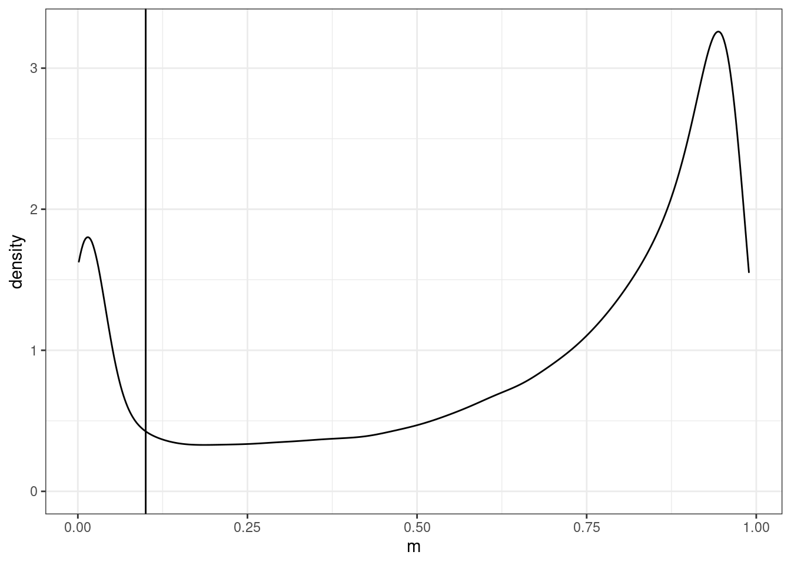
ER_positive_mat_s <- ER_positive_mat[means_ER_positive >= meth_thresh, ]
nrow(ER_positive_mat_s)## [1] 171026We sample 50k loci and calculate a correlation matrix of their methylation values in ER+ samples:
set.seed(17)
ER_positive_mat_s <- ER_positive_mat_s[sample(1:nrow(ER_positive_mat_s), 5e4), ]cm <- tgs_cor(t(ER_positive_mat_s), pairwise.complete.obs=TRUE) %cache_rds% here("data/ER_positive_loci_cm_samp.rds")We remove rows and columns without at least one correlation value above 0.25:
cm1 <- cm
diag(cm1) <- NA
cor_maxs <- matrixStats::rowMaxs(abs(cm1), na.rm=TRUE)
f <- cor_maxs >= 0.25
cm_f <- cm[f, f] dim(cm_f)## [1] 45299 45299We cluster the correlation matrix using hclust:
hc_meth <- as.dist(1-cm_f) %>% fastcluster::hclust(method = "ward.D2") %cache_rds% here("data/ER_positive_loci_cm_hclust.rds")Reorder the dendrogram according to raw average methylation:
hc_meth <- vegan:::reorder.hclust(hc_meth, rowMeans(ER_positive_mat_raw[rownames(cm_f), ], na.rm=TRUE)) %cache_rds% here("data/ER_positive_loci_cm_hclust_reordered.rds")We start by cutting the the tree with a large number of clusters (14) which we will then aim to merge.
k <- 144.4.0.1 Extended Data Figure 4a
options(repr.plot.width = 8, repr.plot.height = 8)
plot_meth_mat_cm(cm_f, k=k, width = 1000, height = 1000, hc_meth=hc_meth, downscale = TRUE, zlim = c(-0.3, 0.3), colors = c("black", "darkred", "white", "darkblue", "cyan"))## downscaling matrix## downscale k: 22## plotting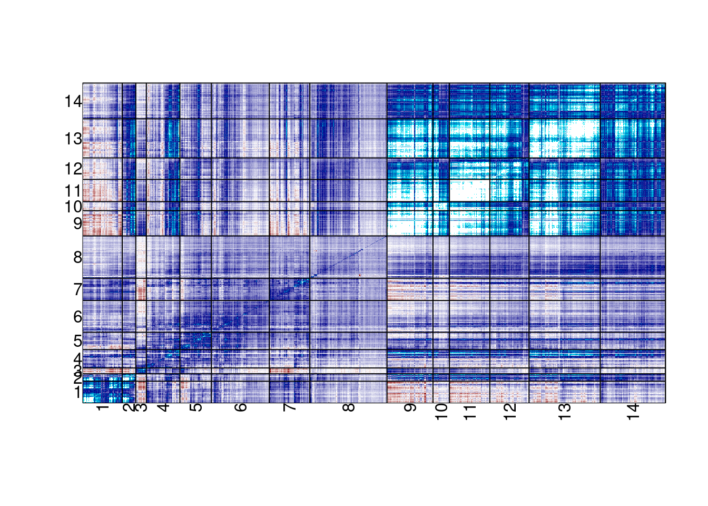
We can see that there is a large group of correlated loci at the top right (9-14), another group in the middle (5), and another one at the bottom left (1-2). In addition, we have another 2 small clusters (3 and 7) which are anti-correlated to each other.
The other clusters (4,6,8) look weak in their intra correalation.
We term the first large group "clock", the second "ML" and the last "MG" due to reasons that would be disscused at clock and Epigenomic-instability notebooks.
ct <- cutree_order(hc_meth, k=k)
ct_new <- case_when(
ct %in% 9:14 ~ "clock",
ct == 5 ~ "ML",
ct %in% 1:2 ~ "MG",
ct == 3 ~ "other1",
ct == 7 ~ "other2",
TRUE ~ "no_cor")
names(ct_new) <- names(ct)clust_df <- as.matrix(ct_new) %>% mat_to_intervs() %>% rename(clust = V1) %cache_df% here("data/ER_positive_loci_clust.tsv") %>% as_tibble()
clust_df %>% count(clust)## # A tibble: 6 x 2
## clust n
## 1 clock 21657
## 2 MG 4102
## 3 ML 2448
## 4 no_cor 13120
## 5 other1 821
## 6 other2 3151We will generate a score for each tumor based on the mean methylation of each group:
feats_mat <- tgs_matrix_tapply(all_norm_meth %>% intervs_to_mat() %>% .[names(ct_new), ] %>% t(), ct_new, mean, na.rm=TRUE) %>% t()We add the TME features for comparison:
tme_df <- fread(here("data/TME_features.tsv")) %>% as_tibble()
feats_mat <- cbind(feats_mat, tme_df %>% select(samp, caf, immune, caf.meth, immune.meth) %>% as.data.frame() %>% column_to_rownames("samp"))feats_df <- feats_mat %>%
as.data.frame() %>%
rownames_to_column("samp") %>%
select(-other1, -other2, -no_cor) %>%
left_join(samp_data %>% select(samp, ER=ER1), by = "samp") %>%
select(samp, ER, everything()) %cache_df%
here("data/epigenomic_features.tsv") %>%
as_tibble()head(feats_df)## # A tibble: 6 x 9
## samp ER clock MG ML caf immune
## 1 MB_0006 ER+ 0.020284548 -0.09092389 -0.006315781 -0.2441946 -0.1114837
## 2 MB_0028 ER+ 0.134212088 -0.02794677 -0.011634957 -1.7266095 -0.9358944
## 3 MB_0046 ER+ 0.017717551 0.01210391 -0.103759329 -0.6545081 -1.0023582
## 4 MB_0050 ER+ 0.003517646 -0.05415309 -0.046344401 1.7038169 0.1281640
## 5 MB_0053 ER+ -0.029721111 0.01603443 0.075428738 -0.8152407 0.2103729
## 6 MB_0054 ER+ 0.067999324 0.04493482 -0.001099083 -0.5608747 0.9292829
## caf.meth immune.meth
## 1 0.2950609 0.4722494
## 2 0.4851022 0.6191494
## 3 0.4210078 0.6308352
## 4 0.2336145 0.4808316
## 5 0.4603347 0.5915159
## 6 0.4790603 0.6093489We save the the cluster association of each locus:
loci_clust <- as.matrix(ct_new) %>% mat_to_intervs() %>% rename(clust = V1) %cache_df% here("data/ER_positive_loci_clust_df.tsv") %>% as_tibble()For the 3 large meta-clusters (clock, MG, ML) we calcualte the raw (before TME normalization) average methylation in each sample:
loci_f <- loci_clust %>% filter(clust %in% c("clock", "MG", "ML")) %>% intervs_to_mat()feats_mat_raw <- tgs_matrix_tapply(all_mat_raw[rownames(loci_f), ] %>% t(), loci_f[, 1], mean, na.rm=TRUE) %>% t() %>% as.data.frame() %>% rownames_to_column("samp")feats_df_raw <- tme_df %>%
left_join(feats_mat_raw, by = "samp") %>%
add_ER() %>%
select(samp, ER, everything()) %fcache_df%
here("data/epigenomic_features_raw_meth.tsv") %>%
as_tibble()
head(feats_df_raw)## # A tibble: 6 x 9
## samp ER caf immune caf.meth immune.meth clock MG
## 1 MB_0006 ER+ -0.2441946 -0.1114837 0.2950609 0.4722494 0.7843678 0.2557624
## 2 MB_0028 ER+ -1.7266095 -0.9358944 0.4851022 0.6191494 0.8746526 0.3684660
## 3 MB_0046 ER+ -0.6545081 -1.0023582 0.4210078 0.6308352 0.7931583 0.3512826
## 4 MB_0050 ER+ 1.7038169 0.1281640 0.2336145 0.4808316 0.8128158 0.1990629
## 5 MB_0053 ER+ -0.8152407 0.2103729 0.4603347 0.5915159 0.7309033 0.3691415
## 6 MB_0054 ER+ -0.5608747 0.9292829 0.4790603 0.6093489 0.8237875 0.3819997
## ML
## 1 0.7020038
## 2 0.7049314
## 3 0.5910172
## 4 0.6801434
## 5 0.7798542
## 6 0.69097094.5 Project clustering on ER- correlation matrix
ER_negative_mat <- all_norm_meth %>% select(chrom:end, any_of(ER_negative_samples)) %>% intervs_to_mat()ER_negative_mat_f <- ER_negative_mat[rownames(cm_f), ]dim(ER_negative_mat_f)## [1] 45299 310cm_f_neg <- tgs_cor(t(ER_negative_mat_f), pairwise.complete.obs=TRUE) %cache_rds% here("data/ER_negative_loci_cm_samp.rds")4.5.0.1 Extended Data Figure 4b
options(repr.plot.width = 8, repr.plot.height = 8)
plot_meth_mat_cm(cm_f_neg, k=k, width = 1000, height = 1000, hc_meth=hc_meth, downscale = TRUE, zlim = c(-0.3, 0.3), colors = c("black", "darkred", "white", "darkblue", "cyan"))## downscaling matrix## downscale k: 22## plotting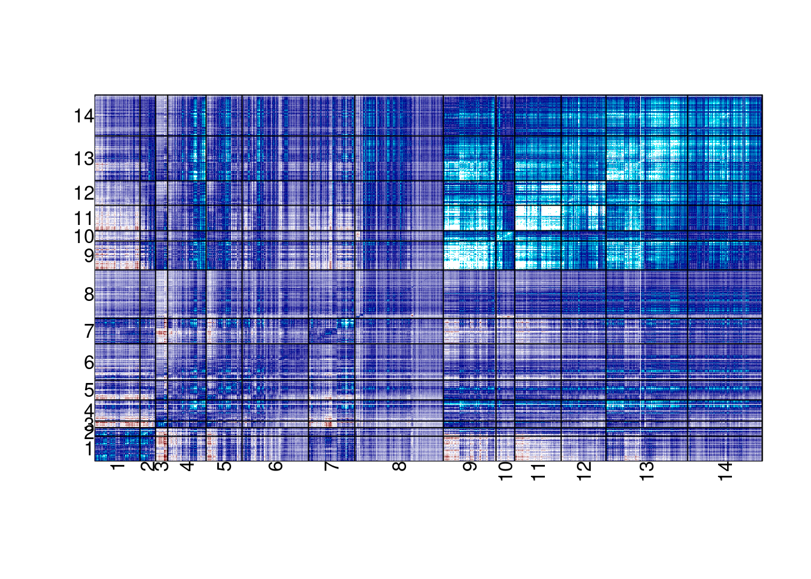
We can see that the clock, MG and ML are preserved also in ER- tumors.
4.6 Classify loci in the genome to epigenomic features
See Loss-clock and Epignomic-instability notebooks for further characterization of the epigenomic scores. We would now continue to look at the broad genomic picture and try to classify loci in the genome based on their correlation with the scores.
# calculate the correlation between normalized methylation and the epigenomic features
epi_features_loci_cors <- function(all_norm_meth, feats_df, samples){
samples <- intersect(samples, feats_df$samp)
samples <- intersect(samples, colnames(all_norm_meth)[-(1:3)])
mat <- all_norm_meth %>% select(chrom:end, any_of(samples)) %>% intervs_to_mat()
feats_mat <- feats_df %>% select(-ER) %>% as.data.frame() %>% column_to_rownames("samp") %>% as.matrix()
loci_cors <- tgs_cor(t(mat[, samples]), feats_mat[samples, ], pairwise.complete.obs = TRUE)
loci_cors <- loci_cors %>% mat_to_intervs()
return(loci_cors)
}loci_cors <- bind_rows(
epi_features_loci_cors(all_norm_meth, feats_df, ER_positive_samples) %>% mutate(ER = "ER+"),
epi_features_loci_cors(all_norm_meth, feats_df, ER_negative_samples) %>% mutate(ER = "ER-"),
epi_features_loci_cors(all_norm_meth, feats_df, normal_samples) %>% mutate(ER = "normal")
) %>%
select(chrom:end, ER, everything()) %fcache_df%
here("data/features_loci_cors.tsv") %>%
as_tibble() Looking at all the correaltions we see that there are loci who are not correlated to any of the featurers:
options(repr.plot.width = 7, repr.plot.height = 7)
loci_cors %>% filter(ER == "ER+") %>% ggplot(aes(x=MG, y=ML, color=clock)) + geom_point(size=0.0001) + theme_bw() + theme(aspect.ratio=1) + scale_color_viridis_c()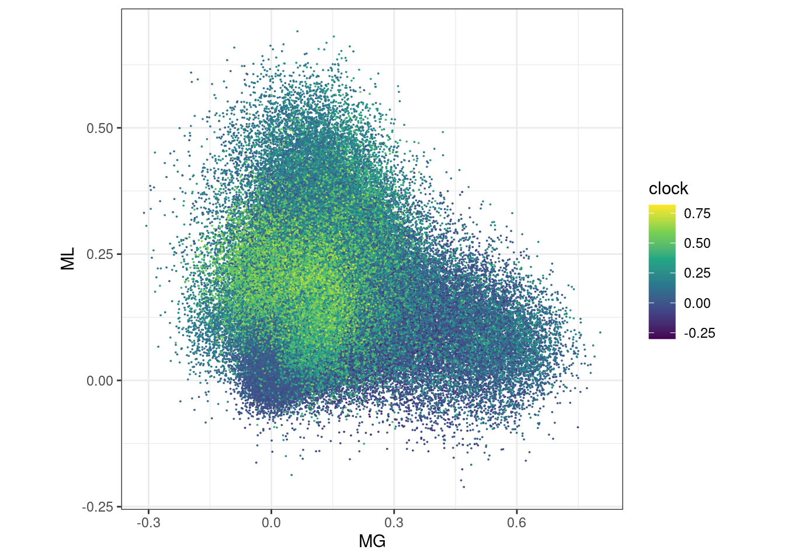
loci_cors %>% filter(ER == "ER+") %>% ggplot(aes(x=ML, y=clock, color=MG)) + geom_point(size=0.0001) + theme_bw() + theme(aspect.ratio=1) + scale_color_viridis_c()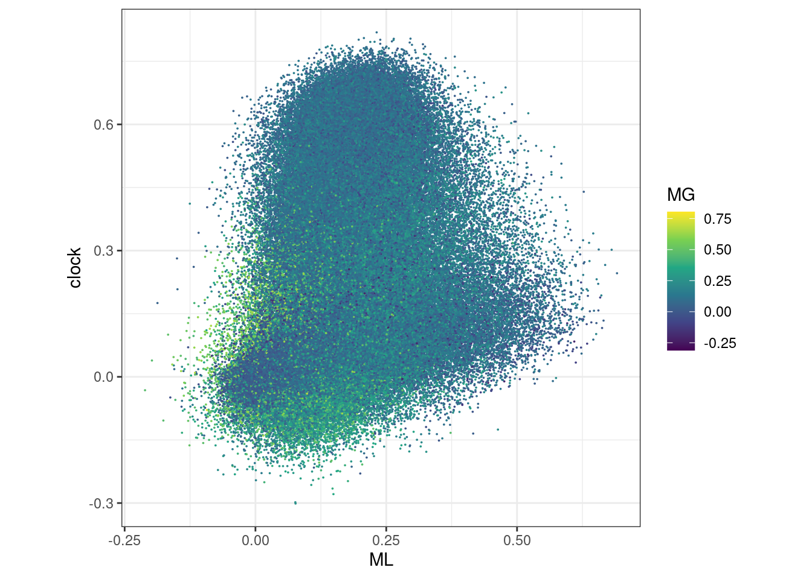
We use PCA (pricinpal component analysis) on the features for visualization of the feature space
loci_cors %>% distinct(chrom, start, end) %>% nrow()## [1] 201082pca <- loci_cors %>% filter(ER == "ER+") %>% select(-ER, -immune, -caf) %>% intervs_to_mat() %>% t() %>% prcomp()df <- pca$rotation %>% mat_to_intervs() %>% left_join(loci_cors %>% filter(ER == "ER+"), by = c("chrom", "start", "end")) %>% as_tibble()4.6.0.1 Figure 2a
options(repr.plot.width = 15, repr.plot.height = 5)
remove_axis <- function(x)
theme( aspect.ratio = 1,
strip.background = element_blank(),
panel.grid.major = element_blank(),
panel.grid.minor = element_blank(),
axis.ticks = element_blank(),
axis.text = element_blank()
)
point_size = 1e-10
viridis_opt <- "E"
limits <- c(-0.25, 0.8)
p_clock_proj <- df %>% ggplot(aes(x=PC1, y=PC2, color=clock)) + geom_point(size=point_size) + remove_axis() + scale_color_viridis_c(option = viridis_opt, limits = limits)
p_MG_proj <- df %>% ggplot(aes(x=PC1, y=PC2, color=MG)) + geom_point(size=point_size) + remove_axis() + scale_color_viridis_c(option = viridis_opt, limits = limits)
p_ML_proj <- df %>% ggplot(aes(x=PC1, y=PC2, color=ML)) + geom_point(size=point_size) + remove_axis() + scale_color_viridis_c(option = viridis_opt, limits = limits)
p_immune_proj <- df %>% ggplot(aes(x=PC1, y=PC2, color=immune)) + geom_point(size=point_size) + remove_axis() + scale_color_viridis_c(option = viridis_opt, limits = limits)
p_caf_proj <- df %>% ggplot(aes(x=PC1, y=PC2, color=caf)) + geom_point(size=point_size) + remove_axis() + scale_color_viridis_c(option = viridis_opt, limits = limits)
(p_clock_proj + p_MG_proj + p_ML_proj) 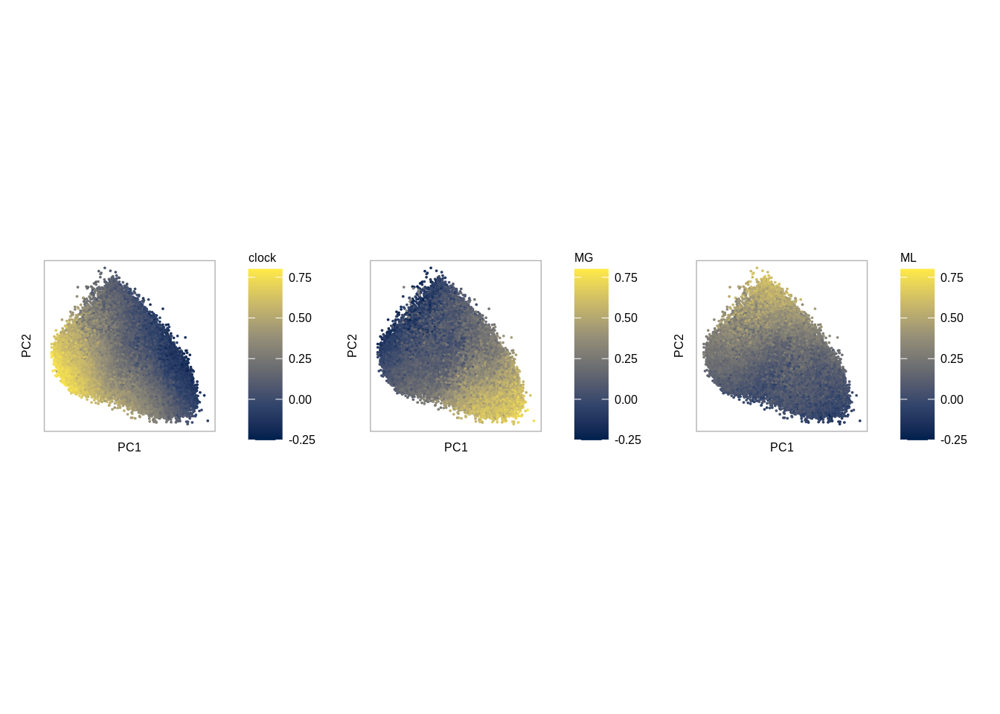
(p_immune_proj + p_caf_proj + plot_spacer())
4.7 Average methylation of the features
We will now move to look at the average methylation distribution of the scores. We will do that computing the average methylation (in ER+/ER-/normal) of loci that are highly correlated to them (above 0.6 for clock and above 0.5 for MG and ML).
loci_annot <- loci_cors %>%
filter(ER == "ER+") %>%
select(-ER) %>%
left_join(get_loci_annot(), by = c("chrom", "start", "end")) %cache_df%
here("data/loci_annot_epigenomic_features.tsv") %>%
as_tibble()
head(loci_annot)## # A tibble: 6 x 18
## chrom start end clock MG ML caf
## 1 chr1 762469 763020 0.001575984 -0.01428874 -0.01551105 0.012110476
## 2 chr1 762676 763227 -0.129625330 0.33612856 0.03607766 -0.006588455
## 3 chr1 860619 861170 -0.050509334 0.29208240 0.14625292 -0.008582681
## 4 chr1 895465 896016 0.068537024 0.34194079 0.04775239 0.007077953
## 5 chr1 901375 901926 0.092230378 0.05256030 0.07306855 0.004076673
## 6 chr1 948345 948896 0.019768875 0.02448860 0.03588616 -0.003594507
## immune caf.meth immune.meth cg_cont tor tss_d k27me3
## 1 -0.0038356268 -0.01015590 0.01583110 0.10130379 64.78630 158 0.9678000
## 2 -0.0051811514 0.27247376 0.13967267 0.12012641 64.80790 -48 0.9832893
## 3 0.0122705825 0.21490060 0.09494949 0.12763213 74.13830 -226 0.9983592
## 4 0.0037199954 0.25625416 0.17188417 0.09146498 78.45700 -226 0.9882345
## 5 0.0119557122 0.01421310 -0.01829405 0.05323296 79.12555 -226 0.9923163
## 6 0.0001512059 0.01424724 0.02610006 0.03862698 82.83044 -226 0.8459000
## k4me1_luminal k4me1_myo1 k4me1_myo2 k4me1_hmec
## 1 0.5759000 0.8639 0.6325000 0.8790000
## 2 0.5759000 0.8639 0.7695000 0.8871000
## 3 0.9742000 0.9781 0.9804800 0.9547000
## 4 0.9742000 0.9603 0.9639000 0.9397000
## 5 0.9995784 0.9781 0.9962854 0.9994769
## 6 0.9940496 0.9704 0.9578000 0.9647000See exons-TME notebook for the generation of this file.
loci_annot_exons <- fread(here("data/exon_annot_epigenomic_features.tsv")) %>% as_tibble()4.8 Plot distribution over samples of the correlated loci
We calculate the average methylation of each sample in loci that pass the threshold of every score:
df_MG <- colMeans(all_mat_raw[loci_annot %>% filter(MG >= 0.5) %>% intervs_to_mat() %>% rownames(), ], na.rm=TRUE) %>% enframe("samp", "MG")
df_ML <- colMeans(all_mat_raw[loci_annot %>% filter(ML >= 0.5) %>% intervs_to_mat() %>% rownames(), ], na.rm=TRUE) %>% enframe("samp", "ML")
df_clock <- colMeans(all_mat_raw[loci_annot %>% filter(clock >= 0.5) %>% intervs_to_mat() %>% rownames(), ], na.rm=TRUE) %>% enframe("samp", "clock")
df_sum <- df_clock %>%
left_join(df_MG, by = "samp") %>%
left_join(df_ML, by = "samp") %>%
add_ER() %>%
filter(!is.na(ER))We can now plot the distribution of scores over samples:
4.8.0.1 Figure 1i
options(repr.plot.width = 4, repr.plot.height = 4)
p_avg_clock <- df_sum %>%
ggplot(aes(x=clock, color=ER)) +
geom_density() +
scale_color_manual(values = annot_colors$ER1) +
theme(aspect.ratio = 1) +
ylab("Density") +
xlab("Clock avg. methylation") +
coord_cartesian(xlim=c(0.25, 1))
p_avg_clock + theme_bw() + theme(aspect.ratio = 0.9) 
4.8.0.2 Figure 2b
options(repr.plot.width = 4, repr.plot.height = 4)
p_avg_MG <- df_sum %>%
ggplot(aes(x=MG, color=ER)) +
geom_density() +
scale_color_manual(values = annot_colors$ER1) +
theme(aspect.ratio = 1) +
ylab("Density") +
xlab("MG avg. methylation") +
coord_cartesian(xlim=c(0, 0.6))
p_avg_MG + theme_bw() + theme(aspect.ratio = 0.9) 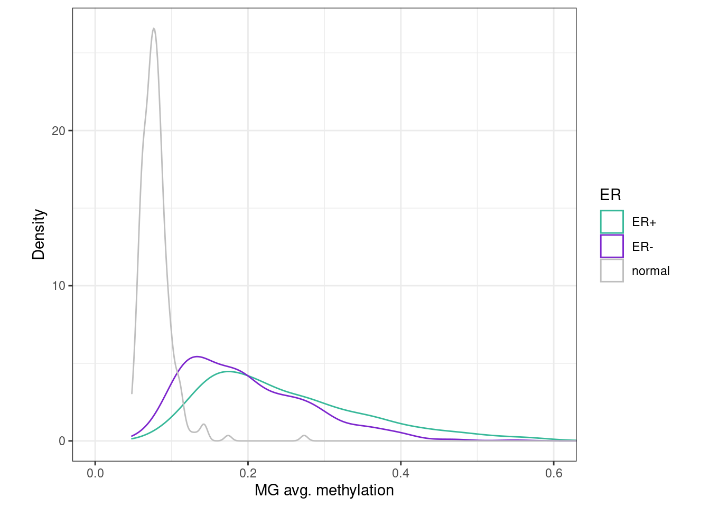
options(repr.plot.width = 4, repr.plot.height = 4)
p_avg_ML <- df_sum %>%
ggplot(aes(x=ML, color=ER)) +
geom_density() +
scale_color_manual(values = annot_colors$ER1) +
theme(aspect.ratio = 1) +
ylab("Density") +
xlab("ML avg. methylation") +
coord_cartesian(xlim=c(0.4, 1))
p_avg_ML + theme_bw() + theme(aspect.ratio = 0.9) 
Calculate p-values:
df_sum %>%
gather("feat", "meth", -samp, -ER) %>%
group_by(feat) %>%
summarise(
p_pos_norm = ks.test(meth[ER == "ER+"], meth[ER == "normal"])$p.value,
p_neg_norm = ks.test(meth[ER == "ER-"], meth[ER == "normal"])$p.value)## # A tibble: 3 x 3
## feat p_pos_norm p_neg_norm
## 1 clock 0 0
## 2 MG 0 0
## 3 ML 0 04.9 Plot loci classification
Next, we classify loci to "Promoters", "Enhancers" or "Background" (non promoter/enhancer), and stratify by CpG content.
df_loci_class <- loci_annot %>%
left_join(promoter_intervs %>% distinct(chrom, start, end) %>% mutate(type = "Promoters"), by = c("chrom", "start", "end"))
k4me1_names <- grep("k4me1", colnames(loci_annot), value=TRUE)
df_loci_class <- df_loci_class %>%
mutate(type =
case_when(
type == "Promoters" ~ "Promoters",
matrixStats::rowAnys((df_loci_class[, k4me1_names] > 0.97), na.rm = TRUE) ~ "Enhancers",
TRUE ~ "Background"
)
) %>%
bind_rows(loci_annot_exons %>% mutate(type = "Exons")) %>%
mutate(cg_cont = cut(cg_cont, c(0,0.04,0.08,1), include.lowest=TRUE, labels=c("Low", "Mid", "High"))) %>%
as_tibble()df_loci_layer <- df_loci_class %>% left_join(get_all_summary_meth(), by = c("chrom", "start", "end")) %>% mutate(normal_type = cut(normal, breaks = c(0, 0.2, 0.9, 1), labels = c("0-0.2", "0.2-0.9", "0.9-1"), include.lowest=TRUE))cor_thresh <- 0.25
df_loci_layer <- df_loci_layer %>%
mutate(layer = case_when(clock >= cor_thresh ~ "clock", MG >= cor_thresh ~ "MG", ML >= cor_thresh ~ "ML", TRUE ~ "other"), layer = factor(layer, levels = c("other", "clock", "ML", "MG")))df_loci_layer %>% count(type, layer) %>% as.data.frame()## type layer n
## 1 Background other 54248
## 2 Background clock 74369
## 3 Background ML 11758
## 4 Background MG 7044
## 5 Enhancers other 16628
## 6 Enhancers clock 5642
## 7 Enhancers ML 5299
## 8 Enhancers MG 10401
## 9 Exons other 17923
## 10 Exons clock 5146
## 11 Exons ML 1944
## 12 Exons MG 4499
## 13 Promoters other 11539
## 14 Promoters clock 780
## 15 Promoters ML 379
## 16 Promoters MG 2995df_loci_layer %>% filter(type == "Enhancers", cg_cont %in% c("Mid", "High")) %>% count(layer) %>% mutate(p = n / sum(n)) %>% as.data.frame()## layer n p
## 1 other 7076 0.41197019
## 2 clock 1260 0.07335817
## 3 ML 1117 0.06503260
## 4 MG 7723 0.44963903df_loci_layer %>%
filter(type == "Enhancers") %>%
count(normal_type, layer) %>%
group_by(normal_type) %>%
mutate(p = n / sum(n)) %>%
as.data.frame()## normal_type layer n p
## 1 0-0.2 other 7141 0.471228718
## 2 0-0.2 clock 573 0.037811799
## 3 0-0.2 ML 184 0.012142009
## 4 0-0.2 MG 7256 0.478817474
## 5 0.2-0.9 other 7208 0.393965894
## 6 0.2-0.9 clock 3933 0.214965020
## 7 0.2-0.9 ML 4021 0.219774814
## 8 0.2-0.9 MG 3134 0.171294272
## 9 0.9-1 other 2279 0.504203540
## 10 0.9-1 clock 1136 0.251327434
## 11 0.9-1 ML 1094 0.242035398
## 12 0.9-1 MG 11 0.0024336284.9.0.1 Figure 2c
options(repr.plot.width = 4, repr.plot.height = 6)
df <- df_loci_layer %>%
filter(type == "Enhancers") %>%
count(normal_type, layer) %>%
group_by(normal_type) %>%
mutate(p = n / sum(n))
p_enh_layer_perc <- df %>%
filter(layer != "other") %>%
ggplot(aes(x=normal_type, y=p, fill=layer)) +
geom_col() +
scale_fill_manual(name = "", values = c("ML" = "darkblue", "MG" = "darkred", "clock" = "darkgreen")) +
scale_y_continuous(limits = c(0,1), labels=scales::percent) +
vertical_labs() +
xlab("Methylation in normal") +
ylab("% of enhancers")
p_enh_layer_perc + theme_bw() + vertical_labs()
4.9.0.2 Extended Data Figure 6c
options(repr.plot.width = 10, repr.plot.height = 10)
df <- df_loci_class %>%
filter(!is.na(cg_cont)) %>%
mutate(cg_cont = case_when(cg_cont == "Low" ~ "Low", cg_cont %in% c("Mid", "High") ~ "Mid/High")) %>%
mutate(
cg_cont = paste(cg_cont, "CpG cont."),
cg_cont = factor(cg_cont, levels=c("Low CpG cont.", "Mid/High CpG cont.")),
type = factor(type, levels=c("Promoters", "Enhancers", "Background", "Exons"))) %>%
select(chrom, start, end, type, cg_cont, clock, MG, ML) %>%
gather("class", "cor", -(chrom:end), -cg_cont, -type)
p_cor_density <- df %>%
ggplot(aes(x=cor, color=class)) +
geom_density(size=0.5) +
scale_color_manual(name = "", values = c("ML" = "darkblue", "MG" = "darkred", "clock" = "darkgreen")) +
guides(color=FALSE) +
ylab("Density") +
xlab("Correlation to epigenomic score") +
facet_grid(type~cg_cont, scales="free_y") +
theme(aspect.ratio=0.5) +
geom_vline(xintercept = cor_thresh, linetype = "dashed", color="darkgray") +
geom_text(data = df %>% count(type, cg_cont) %>% mutate(label = paste0("n=", scales::comma(n))), inherit.aes = FALSE, aes(label=label), x = 0.5, y = 4)## Warning: `guides(<scale> = FALSE)` is deprecated. Please use `guides(<scale> =
## "none")` instead.p_cor_density + theme_bw() + theme(aspect.ratio=0.7)
4.10 Project all epigenomic features using UMAP
set.seed(17)
raw_feats <- fread(here("data/epigenomic_features_raw_meth.tsv"))
um <- raw_feats %>%
mutate(ML = -ML, clock = -clock, immune.meth = -immune.meth, caf.meth = -caf.meth) %>%
mutate(caf = caf / 20, immune = immune / 20) %>%
select(caf, immune, clock, MG, ML) %>%
as.matrix() %>%
umap::umap()mut_df <- fread(here("data/mutations.tsv")) %>% as_tibble()
p53_df <- mut_df %>%
left_join(samp_data %>% select(samp, ER = ER1), by = "samp") %>%
filter(gene == "TP53") %>%
mutate(p53= forcats::fct_recode(mutation, "WT" = "NO MUT", "TP53+" = "MUT+", "TP53-" = "MUT-")) %>%
select(samp, p53)## Warning: Unknown levels in `f`: MUT+pik3ca_df <- mut_df %>%
left_join(samp_data %>% select(samp, ER = ER1), by = "samp") %>%
filter(gene == "PIK3CA") %>%
mutate(pik3ca = forcats::fct_recode(mutation, "WT" = "NO MUT", "PIK3CA+" = "MUT+", "PIK3CA-" = "MUT-")) %>% select(samp, pik3ca)feats_proj <- raw_feats %>%
mutate(ML = -ML, clock = -clock, immune.meth = -immune.meth, caf.meth = -caf.meth) %>%
mutate(x = um$layout[, 1], y = um$layout[, 2]) %>%
left_join(samp_data %>% select(samp, iC10, stage, grade, PAM50, gi = giScore_width, MathScore, epi_burden = log10_global_epm), by = "samp") %>%
mutate(iC10 = factor(iC10, levels = names(annot_colors$iC10))) %>%
mutate(stage = factor(stage, levels = names(annot_colors$stage))) %>%
mutate(grade = factor(grade, levels = names(annot_colors$grade))) %>%
mutate(PAM50 = factor(PAM50, levels = names(annot_colors$PAM50))) %>%
left_join(p53_df, by = "samp") %>%
mutate(p53 = forcats::fct_explicit_na(p53)) %>%
left_join(pik3ca_df, by = "samp") %>%
mutate(pik3ca = forcats::fct_explicit_na(pik3ca)) %>%
mutate(grade = ifelse(ER == "normal", "ADJNORMAL", grade)) %>%
mutate(stage = ifelse(ER == "normal", "ADJNORMAL", stage))4.10.0.1 Figure 4a.
options(repr.plot.width = 20, repr.plot.height = 4)
plotlist <- list()
plotlist$ER <- feats_proj %>%
ggplot(aes(x = x, y = y, color = ER)) +
scale_color_manual(values = annot_colors$ER1)
plotlist$iC10 <- feats_proj %>%
ggplot(aes(x = x, y = y, color = iC10)) +
scale_color_manual(values = annot_colors$iC10)
plotlist$PAM50 <- feats_proj %>%
ggplot(aes(x = x, y = y, color = PAM50)) +
scale_color_manual(values = annot_colors$PAM50)
plotlist$grade <- feats_proj %>%
ggplot(aes(x = x, y = y, color = grade)) +
scale_color_manual(values = annot_colors$grade)
plotlist$stage <- feats_proj %>%
ggplot(aes(x = x, y = y, color = stage)) +
scale_color_manual(values = annot_colors$stage)
for (feat in c("immune", "caf", "clock", "MG", "ML", "gi", "MathScore", "epi_burden")) {
df <- feats_proj
df[[feat]] <- clip_vals(df[[feat]], quantile(df[[feat]], 0.05, na.rm = TRUE), quantile(df[[feat]], 0.95, na.rm = TRUE))
plotlist[[feat]] <- df %>%
ggplot(aes_string(x = "x", y = "y", color = feat)) +
scale_colour_distiller(palette = "RdYlBu")
}
plotlist$p53 <- feats_proj %>%
ggplot(aes(x = x, y = y, color = p53)) +
scale_color_manual(values = c("TP53+" = "darkred", "TP53-" = "darkred", "WT" = "darkgray", "(Missing)" = "darkgray"))
plotlist$pik3ca <- feats_proj %>%
ggplot(aes(x = x, y = y, color = pik3ca)) +
scale_color_manual(values = c("PIK3CA-" = "darkred", "PIK3CA+" = "darkblue", "WT" = "darkgray", "(Missing)" = "darkgray"))
plotlist1 <- map(plotlist, ~
.x +
xlab("") +
ylab("") +
theme(
aspect.ratio = 1,
strip.background = element_blank(),
panel.grid.major = element_blank(),
panel.grid.minor = element_blank(),
axis.ticks = element_blank(),
axis.text = element_blank()
))
p <- plot_grid(plotlist = map(plotlist1, ~ .x + geom_point(size = 0.8)))
plots_ppt1 <- map2(
plotlist[c("immune", "caf", "clock", "MG", "ML")],
c("Immune", "CAF", "Clock", "MG", "ML"),
~ .x + geom_point(size = 0.05) + guides(color = "none") + ggtitle(.y)
)
plots_ppt2 <- map2(
plotlist[c("ER", "grade", "stage", "pik3ca", "p53")],
c("ER", "Grade", "Stage", "PIK3CA", "TP53"),
~ .x + geom_point(size = 0.05) + guides(color = "none") + ggtitle(.y)
)
plot_grid(plotlist = map(plots_ppt1, ~ .x + theme_bw() + theme(aspect.ratio = 1, strip.background = element_blank(), panel.grid.major = element_blank(), panel.grid.minor = element_blank(), axis.ticks = element_blank(), axis.text = element_blank()) + xlab("") + ylab("") + geom_point(size = 0.8)), nrow=1)
plot_grid(plotlist = map(plots_ppt2, ~ .x + theme_bw() + theme(aspect.ratio = 1, strip.background = element_blank(), panel.grid.major = element_blank(), panel.grid.minor = element_blank(), axis.ticks = element_blank(), axis.text = element_blank()) + xlab("") + ylab("") + geom_point(size = 0.8)), nrow=1)
4.11 Compare epigenomic scores to clinical annotations
all_feats <- fread(here("data/epigenomic_features.tsv")) %>% mutate(ML = -ML, clock = -clock, immune.meth = -immune.meth, caf.meth = -caf.meth) %>% as_tibble()feats_tidy <- all_feats %>%
select(-caf, -immune) %>%
rename(caf = caf.meth, immune = immune.meth) %>%
gather("feat", "score", -ER, -samp) 4.11.0.1 Figure 4c, Extended Data Figure 10b
options(repr.plot.width = 7, repr.plot.height = 10)
p_mut <- plot_score_feats_boxp(samp_data %>% select(samp, clin_feat = MathScore), "Mutational load (MATH score)
", feats_tidy, nbins = 5)
p_gi <- plot_score_feats_boxp(samp_data %>% select(samp, clin_feat = giScore_width), "Chromosomal Instability (CIN)", feats_tidy, nbins = 5)
p_mut + p_gi ## Warning: It is deprecated to specify `guide = FALSE` to remove a guide. Please
## use `guide = "none"` instead.
## Warning: It is deprecated to specify `guide = FALSE` to remove a guide. Please
## use `guide = "none"` instead.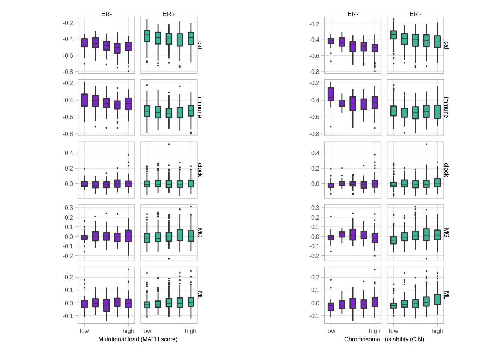
p.values
feats_tidy %>% left_join(samp_data %>% select(samp, clin_feat = MathScore)) %>% group_by(ER, feat) %>% na.omit() %>% do({broom::tidy(cor.test(.$score, .$clin_feat, method = "spearman", use = "pairwise.complete.obs"))}) %>% filter(ER != "normal") %>% filter(p.value < 0.05) %>% arrange(p.value) %>% mutate(signif = case_when(p.value < 0.0001 ~ "****", p.value < 0.001 ~ "***", p.value < 0.01 ~ "**", p.value < 0.05 ~ "*"))## Joining, by = "samp"## Warning in cor.test.default(.$score, .$clin_feat, method = "spearman", use =
## "pairwise.complete.obs"): Cannot compute exact p-value with ties
## Warning in cor.test.default(.$score, .$clin_feat, method = "spearman", use =
## "pairwise.complete.obs"): Cannot compute exact p-value with ties
## Warning in cor.test.default(.$score, .$clin_feat, method = "spearman", use =
## "pairwise.complete.obs"): Cannot compute exact p-value with ties
## Warning in cor.test.default(.$score, .$clin_feat, method = "spearman", use =
## "pairwise.complete.obs"): Cannot compute exact p-value with ties
## Warning in cor.test.default(.$score, .$clin_feat, method = "spearman", use =
## "pairwise.complete.obs"): Cannot compute exact p-value with ties## # A tibble: 5 x 8
## # groups: ER, feat
## ER feat estimate statistic p.value method
## 1 ER+ caf -0.1344037 203009259 0.00001594158 Spearman's rank correlation rho
## 2 ER+ MG 0.1246595 156648143 0.00006338479 Spearman's rank correlation rho
## 3 ER+ ML 0.1224722 157039572 0.00008525637 Spearman's rank correlation rho
## 4 ER- caf -0.2064473 3657784 0.00077389932 Spearman's rank correlation rho
## 5 ER- immune -0.1645390 3530724 0.00755496383 Spearman's rank correlation rho
## alternative signif
## 1 two.sided ****
## 2 two.sided ****
## 3 two.sided ****
## 4 two.sided ***
## 5 two.sided **feats_tidy %>% left_join(samp_data %>% select(samp, clin_feat = giScore_width)) %>% group_by(ER, feat) %>% na.omit() %>% do({broom::tidy(cor.test(.$score, .$clin_feat, method = "spearman", use = "pairwise.complete.obs"))}) %>% filter(ER != "normal") %>% filter(p.value < 0.05) %>% arrange(p.value) %>% mutate(signif = case_when(p.value < 0.0001 ~ "****", p.value < 0.001 ~ "***", p.value < 0.01 ~ "**", p.value < 0.05 ~ "*"))## Joining, by = "samp"## # A tibble: 7 x 8
## # groups: ER, feat
## ER feat estimate statistic p.value method
## 1 ER+ caf -0.2858945 238304890 7.387265e-21 Spearman's rank correlation rho
## 2 ER+ ML 0.2837975 132728278 1.497974e-20 Spearman's rank correlation rho
## 3 ER+ MG 0.2689927 135471936 1.636804e-18 Spearman's rank correlation rho
## 4 ER- caf -0.2551031 3805302 3.005832e-05 Spearman's rank correlation rho
## 5 ER- ML 0.1784401 2490858 3.734964e-03 Spearman's rank correlation rho
## 6 ER- MG -0.1256257 3412744 4.183906e-02 Spearman's rank correlation rho
## alternative signif
## 1 two.sided ****
## 2 two.sided ****
## 3 two.sided ****
## 4 two.sided ****
## 5 two.sided **
## 6 two.sided *
## # ... with 1 more rowsfeats_tidy %>% left_join(samp_data %>% select(samp, clin_feat = giScore_width), by = "samp") %>% count(ER, feat)## # A tibble: 15 x 3
## ER feat n
## 1 ER- caf 310
## 2 ER- clock 310
## 3 ER- immune 310
## 4 ER- MG 310
## 5 ER- ML 310
## 6 ER+ caf 1108
## # ... with 9 more rows4.12 Distribution of the scores in iC10 integrative clusters
feats_tidy <- all_feats %>%
gather("feat", "score", -samp, -ER) %>%
mutate(ER = factor(ER, levels = c("ER+", "ER-", "normal")))
df_iC10 <- samp_data %>%
select(samp, iC10) %>%
mutate(iC10 = factor(iC10, levels = names(annot_colors$iC10))) %>%
left_join(feats_tidy, by = "samp") %>%
filter(ER != "normal", !is.na(feat))
df_iC10_count <- df_iC10 %>%
group_by(feat) %>%
mutate(score = cut(score, breaks = quantile(score, 0:5 / 5, na.rm = TRUE), include.lowest = TRUE, labels = as.character(1:5))) %>%
count(iC10, feat, score) %>%
group_by(feat, score) %>%
mutate(p = n / sum(n))4.12.0.1 Extended Data Figure 10a
options(repr.plot.width = 5, repr.plot.height = 10)
p_iC10_count <- df_iC10_count %>%
mutate(feat = factor(feat, levels = c("caf", "immune", "clock", "MG", "ML"))) %>%
filter(!is.na(feat)) %>%
ggplot(aes(fill = iC10, y = p, x = score, label = n)) +
geom_col(width = 1, color = "black") +
scale_fill_manual(values = annot_colors$iC10) +
geom_text(family = "Arial", size = 1, position = position_stack(vjust = 0.5)) +
guides(color = "none") +
facet_grid(feat ~ .) +
ylab("% of samples") +
xlab("Score") +
scale_y_continuous(labels = scales::percent) +
theme(aspect.ratio = 0.6, axis.text.x = element_blank(), axis.ticks.x = element_blank(), panel.grid.major = element_blank(), panel.grid.minor = element_blank(), panel.background = element_blank(), panel.border = element_blank())
p_iC10_count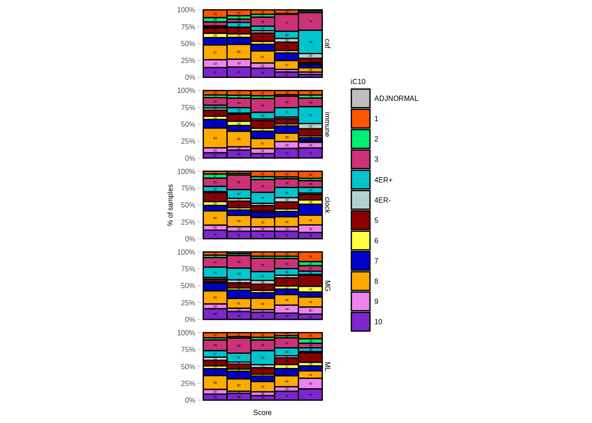
p_ic10 <- df_iC10 %>%
ggplot(aes(x = iC10, y = score, fill = iC10)) +
geom_hline(yintercept = 0, color = "darkgray") +
geom_boxplot(lwd = 0.2, outlier.size = 0.2) +
scale_fill_manual(values = annot_colors$iC10, guide = "none") +
facet_grid(feat ~ ., scales = "free_y") +
ylab("") +
xlab("iC10") +
theme(aspect.ratio = 0.5)
p_ic10
4.13 Epipolymorphism of the epigenomic layers
loci_epi_mean <- fread(here("data/loci_epipoly_mean.tsv")) %>% as_tibble() gvtrack.create("d_exon", "intervs.global.exon", "distance")
gvtrack.create("d_intron", "intervs.global.introns", "distance")
gvtrack.create("d_promoter", promoter_intervs, "distance")
loci_annot <- gextract.left_join(c("d_promoter", "d_exon", "d_intron"), intervals = loci_annot %>% distinct(chrom, start, end), iterator = loci_annot %>% distinct(chrom, start, end)) %>%
as_tibble() %>%
right_join(loci_annot, by = c("chrom", "start", "end"))
loci_annot <- loci_annot %>% mutate(type = case_when(
d_promoter == 0 ~ "promoter",
d_exon == 0 ~ "exon",
d_intron == 0 ~ "intron",
TRUE ~ "inter-genic"
))plot_epipoly_strip <- function(df, df_bg, ER, k=15){
p_bg <- df_bg %>%
filter(ER == !!ER) %>%
arrange(pat_meth) %>%
filter(!is.na(epipoly)) %>%
group_by(type) %>%
mutate(med = zoo::rollmedian(epipoly, k = k, na.pad = TRUE)) %>%
ggplot(aes(x = pat_meth, y = epipoly)) +
geom_point(size = 0.001, color="gray", alpha=0.5) +
geom_line(inherit.aes = FALSE, data = tibble(m = seq(0, 1, by = 0.001)) %>% mutate(epipoly = 2 * m * (1 - m)), linetype = "dashed", aes(x = m, y = epipoly)) +
geom_line(inherit.aes = FALSE, data = tibble(m = seq(0, 1, by = 0.001)) %>% mutate(epipoly = 1 - ((1 - 2 * m + 2 * m * m)^5)), linetype = "dashed", aes(x = m, y = epipoly)) +
xlab("Avg. methylation") +
ylab("Epi-polymorphism")
df <- df %>%
filter(ER == !!ER) %>%
arrange(pat_meth) %>%
filter(!is.na(epipoly)) %>%
group_by(type) %>%
mutate(med = zoo::rollmedian(epipoly, k = k, na.pad = TRUE))
p <- p_bg +
geom_point(data = df, size = 0.001, color="darkred", alpha=0.5) +
geom_line(inherit.aes = FALSE, aes(x = pat_meth, y = med), lwd = 0.6) +
geom_line(data = df, inherit.aes = FALSE, aes(x = pat_meth, y = med), color = "red", lwd = 0.6) +
theme(aspect.ratio = 1)
p + facet_grid(.~type)
}4.13.0.1 Extended Data Figure 7a
options(repr.plot.width = 15, repr.plot.height = 5)
df <- loci_epi_mean %>% inner_join(loci_annot %>% filter(MG >= 0.5))## Joining, by = c("chrom", "start", "end")df_bg <- loci_epi_mean %>% anti_join(loci_annot %>% filter(MG >= 0.5)) %>% left_join(loci_annot)## Joining, by = c("chrom", "start", "end")
## Joining, by = c("chrom", "start", "end")p_epipoly_MG <- plot_epipoly_strip(df, df_bg, "ER+", k=101) + ggtitle("MG")
p_epipoly_MG## Warning: Removed 100 row(s) containing missing values (geom_path).
## Warning: Removed 100 row(s) containing missing values (geom_path).
options(repr.plot.width = 15, repr.plot.height = 5)
df <- loci_epi_mean %>% inner_join(loci_annot %>% filter(ML >= 0.5))## Joining, by = c("chrom", "start", "end")df_bg <- loci_epi_mean %>% anti_join(loci_annot %>% filter(ML >= 0.5)) %>% left_join(loci_annot)## Joining, by = c("chrom", "start", "end")
## Joining, by = c("chrom", "start", "end")p_epipoly_ML <- plot_epipoly_strip(df, df_bg, "ER+", k=101) + ggtitle("ML")
p_epipoly_ML## Warning: Removed 100 row(s) containing missing values (geom_path).## Warning: Removed 109 row(s) containing missing values (geom_path).
4.14 Comparison of the epigenomic scores with existing epigenomic age metrics
4.14.1 phenoAge
Compare the epigenomic scores with phenoAge score from Steve Horvath's lab (PMID: 29676998)
cpg_450k <- gintervals.load("intervs.450k_27k.cpgs") %>% as_tibble()
pheno_age <- fread(here("data/phenoAge.tsv")) %>% select(id = CpG) %>% left_join(cpg_450k, by = "id") %>% slice(-1) %>% select(chrom, start, end, id) %>% as_tibble()pheno_age_mb <- fread(here("data/pheno_age_score.tsv")) %>% as_tibble()Unfortunately, the METABRIC data doesn't cover all of phenoAge CpGs, but we have sufficient CpGs for correlating with the epigenomic scores:
options(repr.plot.width = 7, repr.plot.height = 7)
n_cpgs_pheno <- colSums(!is.na(pheno_age_mb %>% intervs_to_mat())) %>% enframe("samp", "n_cpgs")
n_cpgs_pheno %>% ggplot(aes(x=n_cpgs, y = 1-..y..)) + stat_ecdf() + xlab("# of CpGs") + ylab("Fraction of samples") + theme_bw() + theme(aspect.ratio = 1)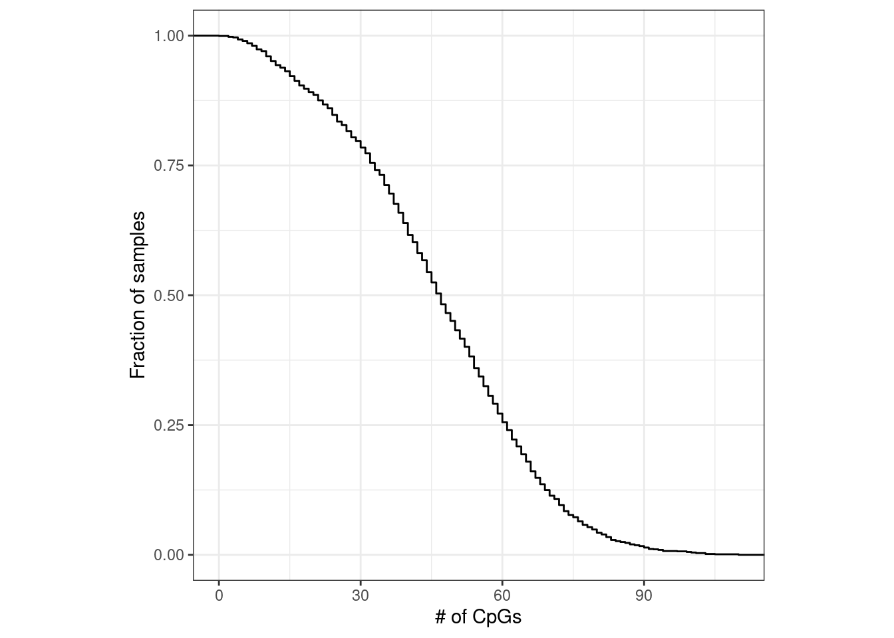
options(repr.plot.width = 7, repr.plot.height = 7)
n_samples_pheno <- rowSums(!is.na(pheno_age_mb %>% intervs_to_mat())) %>% enframe("cpg", "n_samples")
n_samples_pheno %>% ggplot(aes(x=n_samples, y = 1-..y..)) + stat_ecdf() + xlab("# of samples") + ylab("fraction of CpGs") + theme_bw() + theme(aspect.ratio = 1) + scale_x_log10()## Warning: Transformation introduced infinite values in continuous x-axis## Warning: Removed 324 rows containing non-finite values (stat_ecdf).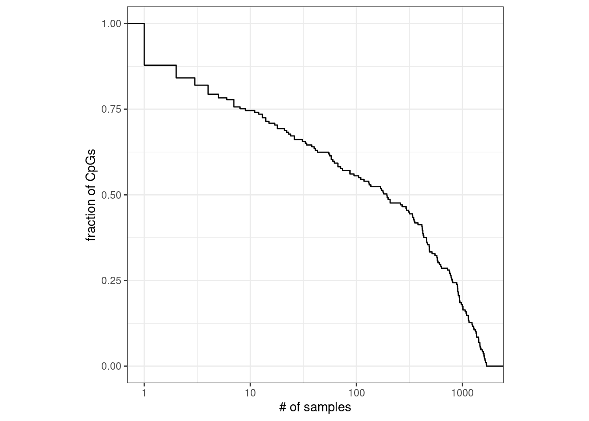
pheno_age_df <- pheno_age_mb %>% intervs_to_mat() %>% colMeans(na.rm = TRUE) %>% enframe("samp", "pheno_age_score") %>% left_join(n_cpgs_pheno) %>% filter(n_cpgs >= 50)## Joining, by = "samp"options(repr.plot.width = 15, repr.plot.height = 8)
df <- all_feats %>%
gather("feat", "score", clock:immune.meth) %>%
left_join(pheno_age_df)## Joining, by = "samp"p_pheno_age <- df %>%
ggplot(aes(x=score, y=pheno_age_score, color=ER)) + geom_point(size=0.5) + facet_grid(ER~feat, scales="free") + scale_color_manual(values=annot_colors$ER1) + theme(aspect.ratio=1)
p_pheno_age + theme_bw() + theme(aspect.ratio=1)## Warning: Removed 5649 rows containing missing values (geom_point).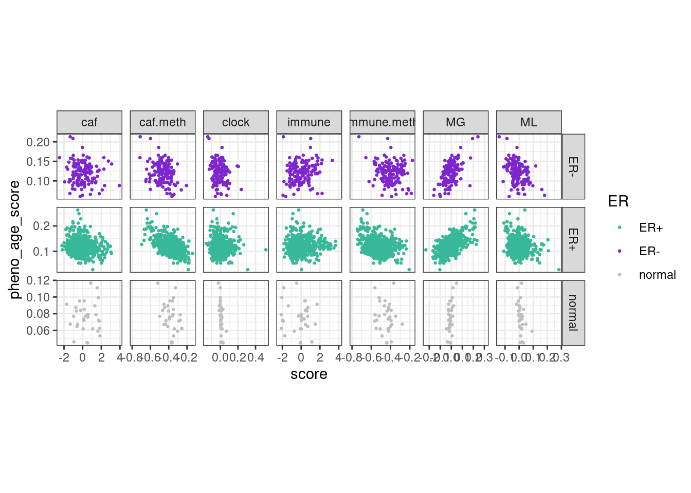
df %>%
group_by(feat) %>%
summarise(cor = cor(pheno_age_score, score, use="pairwise.complete.obs")) %>%
arrange(cor) %>%
as.data.frame()## feat cor
## 1 caf.meth -0.45571500
## 2 ML -0.28793733
## 3 immune.meth -0.24872108
## 4 caf -0.18080950
## 5 clock -0.06886096
## 6 immune 0.10135506
## 7 MG 0.560601884.14.1.1 Ext Data Figure 5e
options(repr.plot.width = 15, repr.plot.height = 5)
p_pheno_age_clock <- df %>%
filter(feat == "clock") %>%
mutate(ER = factor(ER, levels = c("ER+", "ER-", "normal"))) %>%
ggplot(aes(x=score, y=pheno_age_score, color=ER)) + geom_point(size=0.1) + facet_grid(.~ER) + scale_color_manual(values=annot_colors$ER1) + theme(aspect.ratio=1) + ylab("PhenoAge") + xlab("Clock")
p_pheno_age_clock + theme_bw() + theme(aspect.ratio=1)## Warning: Removed 807 rows containing missing values (geom_point).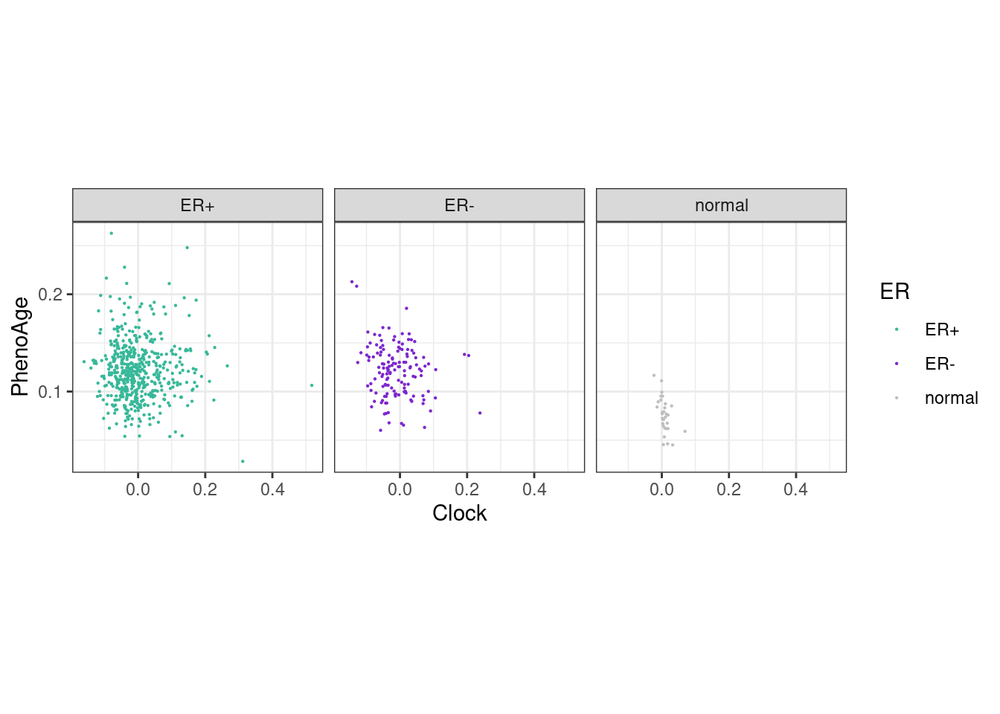
4.14.1.2 Ext Data Figure 5f
options(repr.plot.width = 15, repr.plot.height = 5)
df <- pheno_age_df %>%
left_join(samp_data %>% select(samp, age)) %>%
add_ER()## Joining, by = "samp"df %>% summarise(cor = cor(age, pheno_age_score, method = "spearman", use = "pairwise.complete.obs"))## # A tibble: 1 x 1
## cor
## 1 0.06263803p_age_pheno <- df %>%
filter(!is.na(ER)) %>%
ggplot(aes(x=age, y=pheno_age_score, color=ER)) +
geom_point(size=0.1) +
scale_color_manual(values = annot_colors$ER1) +
theme(aspect.ratio = 1) +
facet_grid(.~ER) +
xlab("Biological age") +
ylab("phenoAge")
p_age_pheno + theme_bw() + theme(aspect.ratio = 1)## Warning: Removed 33 rows containing missing values (geom_point).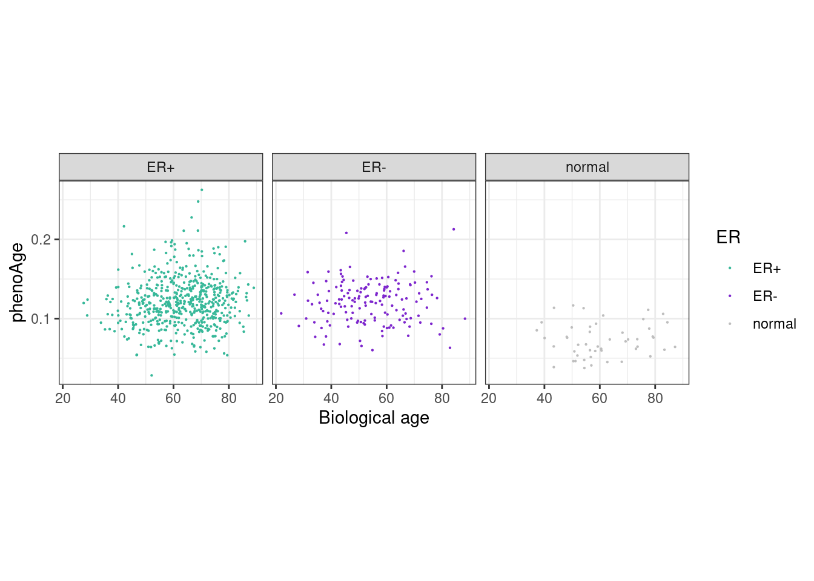
feats_mat <- all_feats %>% select(-ER) %>% column_to_rownames("samp") %>% as.matrix()
pheno_mat <- intervs_to_mat(pheno_age_mb)
samples <- intersect(colnames(pheno_mat), rownames(feats_mat))
cor_pheno <- tgs_cor(feats_mat[samples, ], t(pheno_mat[, samples]), pairwise.complete.obs=TRUE) %>% t() %>% mat_to_intervs() %>% as_tibble()4.14.1.3 Ext Data Figure 5d
options(repr.plot.width = 4, repr.plot.height = 4)
cor_thresh <- 0.25
cor_pheno <- cor_pheno %>% mutate(type = case_when(clock >= cor_thresh ~ "clock", MG >= cor_thresh ~ "MG", ML >= cor_thresh ~ "ML", is.na(MG) | is.na(ML) | is.na(clock) ~ "missing", TRUE ~ "other"))
p_pheno_cpgs <- cor_pheno %>%
count(type) %>%
ggplot(aes(x=reorder(type, n), y=n)) + geom_col() + xlab("CpG type") + ylab("phenoAge CpGs") + vertical_labs()
p_pheno_cpgs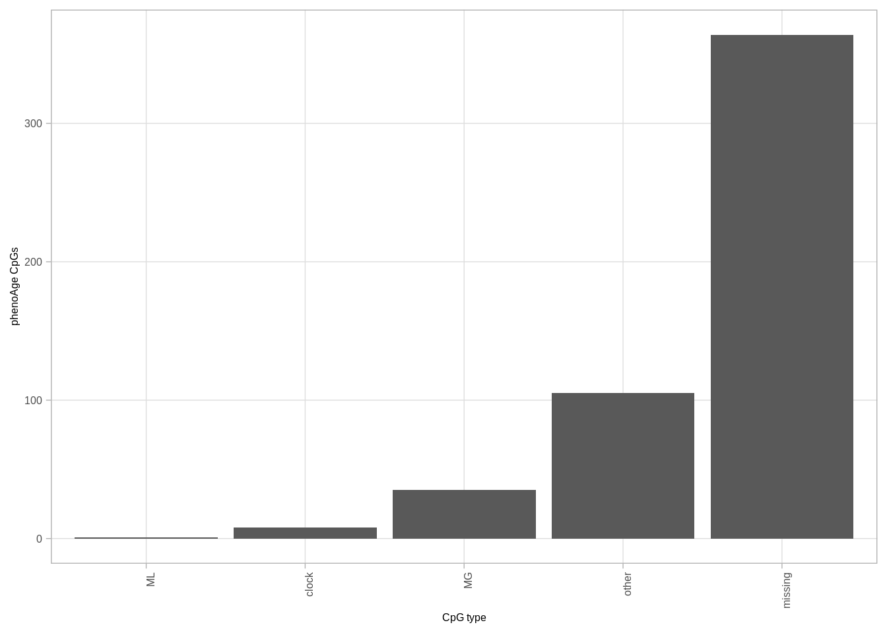
gc()## used (Mb) gc trigger (Mb) max used (Mb)
## Ncells 5190360 277.2 13921326 743.5 13921326 743.5
## Vcells 10668643577 81395.3 15420004920 117645.4 13689732018 104444.4